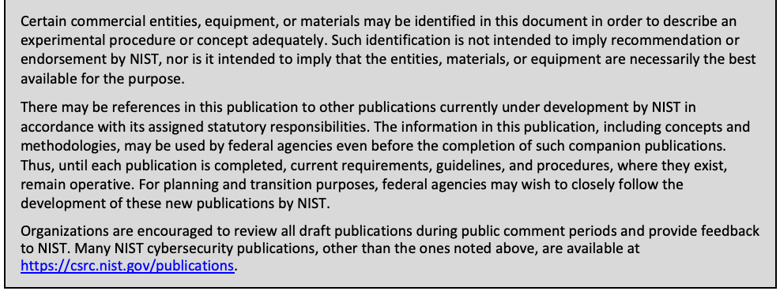
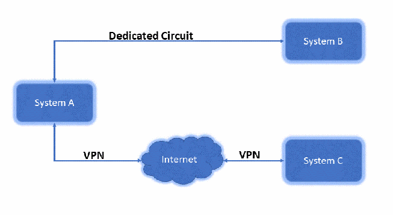
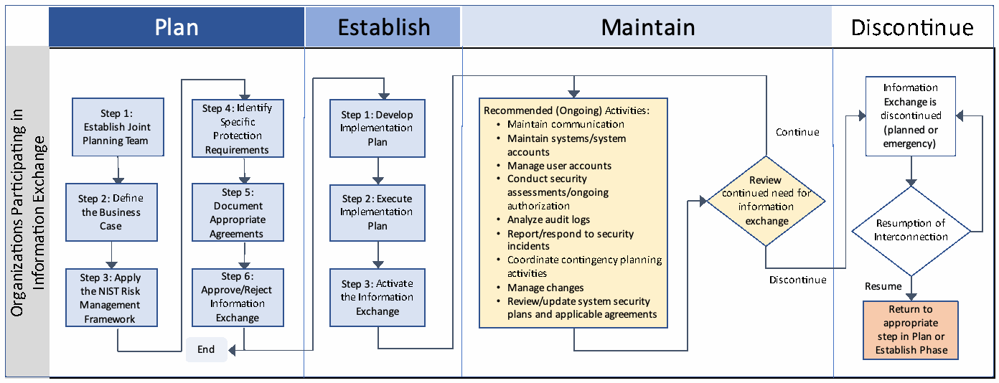
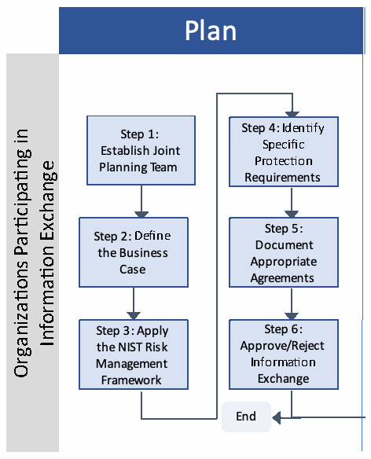
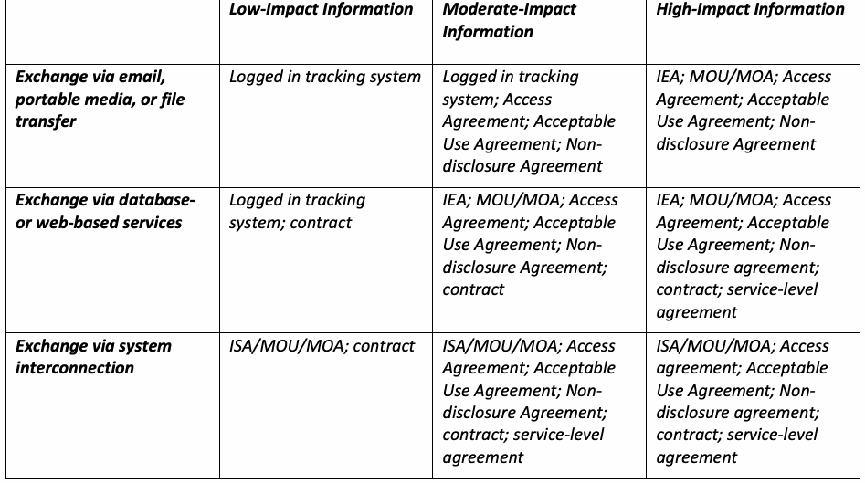
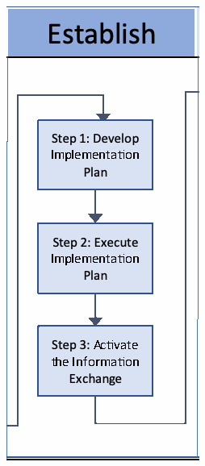
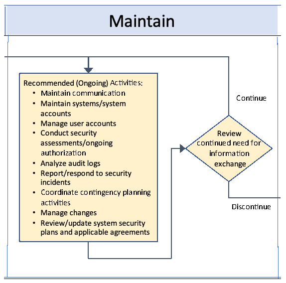
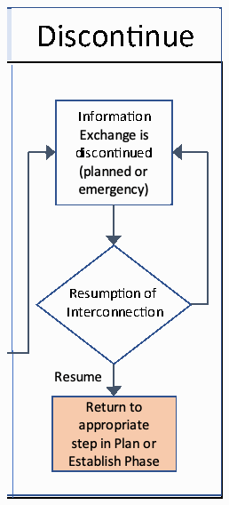

NIST Special Publication · PDF 原文抽出
Managing the Security of Information Exchanges
情報交換のセキュリティ管理
NIST SP 800-47 Rev. 1（Managing the Security of Information Exchanges）の英文と日本語訳を段落ごとに並べた閲覧用ページです。組織間で情報を交換・共有する際、交換前・中・後の情報保護をリスクに応じて管理するため、情報交換の識別、保護要件、合意文書の作成と運用を説明します。 翻訳は有志による非公式のもので、NIST および米国商務省が作成・承認・推奨したものではありません。要件の確認にはNIST の正式版 PDFを参照してください。
PDF から抽出した原文は原本との照合待ちです。
本文の数式はLaTeXの構造からKaTeXで表示しています。
NIST Special Publication 800-47
NIST特別刊行物800-47
未レビュー訳Revision 1
改訂第1版
未レビュー訳Managing the Security of Information Exchanges
情報交換のセキュリティ管理
未レビュー訳Kelley Dempsey Victoria Yan Pillitteri Andrew Regenscheid
Kelley Dempsey Victoria Yan Pillitteri Andrew Regenscheid
未レビュー訳This publication is available free of charge from: https://doi.org/10.6028/NIST.SP.800-47r1
本刊行物は次のURLから無料で入手できる：https://doi.org/10.6028/NIST.SP.800-47r1
未レビュー訳NIST Special Publication 800-47 Revision 1
翻訳準備中
Managing the Security of Information Exchanges
翻訳準備中
Computer Security Division Information Technology Laboratory
翻訳準備中
Kelley Dempsey Victoria Pillitteri Andrew Regenscheid
翻訳準備中
This publication is available free of charge from: https://doi.org/10.6028/NIST.SP.800-47r1
本刊行物は次のURLから無料で入手できる：https://doi.org/10.6028/NIST.SP.800-47r1
July 2021
2021年7月
U.S. Department of Commerce Gina M. Raimondo, Secretary
米国商務省 Gina M. Raimondo長官
National Institute of Standards and Technology
翻訳準備中
James K. Olthoff, Performing the Non-Exclusive Functions and Duties of the Under Secretary of Commerce for Standards and Technology & Director, National Institute of Standards and Technology
翻訳準備中
Authority
権限
未レビュー訳This publication has been developed by NIST to further its statutory responsibilities under the Federal Information Security Modernization Act (FISMA) of 2014, 44 U.S.C. § 3551 et seq., Public Law (P.L.) 113-283.
本刊行物は、NISTの法定責務を果たすため、2014年連邦情報セキュリティ近代化法（FISMA）、合衆国法典第44編第3551条以降、および公法（P.L.）113-283に基づいて作成された。
未レビュー訳283.NIST is responsible for developing information security standards and guidelines, including minimum requirements for federal information systems. Such information security standards and guidelines shall not apply to national security systems without the express approval of the appropriate federal officials exercising policy authority over such systems. This guideline is consistent with the requirements of the Office of Management and Budget (OMB) Circular A-130.
283.NISTは、連邦情報システムの最低要件を含む情報セキュリティ標準および指針を策定する責任を負う。ただし、国家安全保障システムには、そのシステムに関する政策権限を有する適切な連邦当局者が明示的に承認しない限り、これらの標準および指針を適用してはならない。本指針は行政管理予算局（OMB）通達A-130の要件に沿っている。
Nothing in this publication should be taken to contradict the standards and guidelines made mandatory and binding on federal agencies by the Secretary of Commerce under statutory authority. Nor should these guidelines be interpreted as altering or superseding the existing authorities of the Secretary of Commerce, OMB Director, or any other federal official. This publication may be used by nongovernmental organizations on a voluntary basis and is not subject to copyright in the United States. Attribution would, however, be appreciated by NIST.
本刊行物のいかなる記述も、商務長官が法的権限に基づいて連邦機関に義務付けた標準および指針と矛盾すると解釈すべきではない。また、本指針を、商務長官、OMB長官、その他の連邦当局者の既存の権限を変更または無効にするものと解釈すべきでもない。本刊行物は非政府組織も任意に利用でき、米国内では著作権の対象とならない。ただし、NISTは出典を明記することを歓迎する。
National Institute of Standards and Technology Special Publication 800-47 Revision 1 Natl. Inst. Stand. Technol. Spec. Publ. 800-47 Revision 1, 58 pages (July 2021) CODEN: NSPUE2
NIST国立標準技術研究所 特別刊行物800-47 改訂第1版。米国国立標準技術研究所 特別刊行物800-47 改訂第1版、58ページ（2021年7月）。CODEN: NSPUE2
未レビュー訳This publication is available free of charge from: https://doi.org/10.6028/NIST.SP.800-47r1
本刊行物は次のURLから無料で入手できる：https://doi.org/10.6028/NIST.SP.800-47r1

抽出したテキスト（原本と未照合・参考）
Certain commercial entities, equipment, or materials may be identified in this document in order to describe an experimental procedure or concept adequately. Such identification is not intended to imply recommendation or endorsement by NIST, nor is it intended to imply that the entities, materials, or equipment are necessarily the best available for the purpose. There may be references in this publication to other publications currently under development by NIST in accordance with its assigned statutory responsibilities. The information in this publication, including concepts and methodologies, may be used by federal agencies even before the completion of such companion publications. Thus, until each publication is completed, current requirements, guidelines, and procedures, where they exist, remain operative. For planning and transition purposes, federal agencies may wish to closely follow the development of these new publications by NIST. Organizations are encouraged to review all draft publications during public comment periods and provide feedback to NIST. Many NIST cybersecurity publications, other than the ones noted above, are available at https://csrc.nist.gov/publications.抽出したテキストの訳（原本と未照合・参考）
この文書では、実験手順や概念を適切に説明するため、特定の商業組織、機器、または材料を示す場合がある。そのような記載は、NISTによる推奨または承認を意味するものではなく、記載された組織、材料、機器が目的に対して必ずしも最適であることを意味するものでもない。本刊行物では、法定責務に従いNISTが現在策定中の他の刊行物を参照する場合がある。本刊行物に含まれる情報（概念や方法論を含む）は、関連刊行物の完成前でも連邦機関が利用できる。したがって、各刊行物が完成するまで、現行の要件、指針、手順が存在する場合は引き続き有効である。計画および移行に備え、連邦機関はNISTによる新刊行物の策定状況を注意深く確認するとよい。組織には、パブリックコメント期間中にすべての草案を確認し、NISTに意見を提出することが推奨される。前述のもの以外にも、多くのNISTサイバーセキュリティ刊行物を https://csrc.nist.gov/publications で入手できる。Comments on this publication may be submitted to:
本刊行物に関する意見の提出先：
National Institute of Standards and Technology Attn: Computer Security Division, Information Technology Laboratory 100 Bureau Drive (Mail Stop 8930) Gaithersburg, MD 20899-8930 Email: sec-cert@nist.gov
米国国立標準技術研究所 宛先：情報技術研究所コンピュータセキュリティ部門 100 Bureau Drive（Mail Stop 8930）Gaithersburg, MD 20899-8930 電子メール：sec-cert@nist.gov
未レビュー訳All comments are subject to release under the Freedom of Information Act (FOIA) [FOIA96].
すべてのコメントは情報公開法（FOIA）[FOIA96] に基づく公開の対象となる。
Reports on Computer Systems Technology
コンピューターシステム技術報告書
The Information Technology Laboratory (ITL) at the National Institute of Standards and Technology (NIST) promotes the U.S. economy and public welfare by providing technical leadership for the Nation’s measurement and standards infrastructure. ITL develops tests, test methods, reference data, proof of concept implementations, and technical analyses to advance the development and productive use of information technology. ITL’s responsibilities include the development of management, administrative, technical, and physical standards and guidelines for the cost-effective security and privacy of other than national security-related information in federal information systems. The Special Publication 800-series reports on ITL’s research, guidelines, and outreach efforts in information system security, and its collaborative activities with industry, government, and academic organizations.
米国国立標準技術研究所（NIST）の情報技術研究所（ITL）は、国家の計量・標準基盤に技術的リーダーシップを提供し、米国経済と公共の福祉を促進する。ITLは情報技術の発展と生産的利用を前進させる試験、試験方法、参照データ、概念実証実装、技術分析を開発する。ITLの責務には、国家安全保障関連以外の連邦情報システム情報の費用対効果の高いセキュリティとプライバシーのための管理的、事務的、技術的、物理的標準・指針の策定が含まれる。特別刊行物800シリーズは、情報システムセキュリティに関するITLの研究、指針、普及活動、および産業界、政府、学術機関との協力活動を報告する。
Abstract
概要
An organization often has mission and business-based needs to exchange (share) information with one or more other internal or external organizations via various information exchange channels. However, it is recognized that the information being exchanged also requires the same or similar level of protection as it moves from one organization to another (protection commensurate with risk).
組織は使命・業務上の必要性から、さまざまな情報交換チャネルを通じて、内部または外部の他組織と情報を共有・交換する必要がある。交換情報にも、組織間を移動する間、リスクに見合う同等または類似の保護水準が必要である。
This publication focuses on managing the protection of the information being exchanged or accessed before, during, and after the exchange and provides guidance on identifying information exchanges, considerations for protecting exchanged information, and the agreement(s) needed to help manage the risk associated with exchanging information. This publication does not provide implementation guidance on any particular type of technology-based connection, information access, or exchange method. Organizations are expected to tailor the guidance to meet specific organizational needs and requirements regarding the information exchange.
本刊行物は、交換またはアクセスされる情報を交換の前・最中・後に保護する管理に焦点を当て、情報交換の特定、交換情報の保護上の考慮事項、情報交換に伴うリスクの管理に役立つ必要な合意について指針を示す。特定の技術接続、情報アクセス、交換方法の実装指針は示さない。組織は情報交換に関する固有のニーズ・要件に合わせて指針を調整することが想定される。
Keywords
キーワード
未レビュー訳agreements; connection; information exchange; information exchange agreement; interconnection; interconnection security agreement; memoranda of agreement; memoranda of understanding; nondisclosure agreement; protection requirements; risk management; service level agreement; user agreement.
合意、接続、情報交換、情報交換合意、相互接続、相互接続セキュリティ合意、合意覚書、了解覚書、秘密保持契約、保護要件、リスク管理、サービスレベル合意、利用者合意。
未レビュー訳Acknowledgments
謝辞
The authors – Kelley Dempsey, Victoria Yan Pillitteri, and Andrew Regenscheid – wish to thank their colleagues who reviewed drafts of this publication and provided valuable input, including Joseph Boone, Joshua Finney, Stephen Ford, Greg Frassmann, Ann Galchutt, Jay Gazlay, Nedim Goren, Alan McClelland, Douglas Montgomery, Thomas Ritz, Scott Rose, John Simms, and Scott Spitnale. The authors also gratefully acknowledge Editorial Review Board reviewers Alan McClelland and Michael Bartock, the work of the original authors of SP 800-47, Tim Grance, Joan Hash, Steven Peck, Jonathan Smith, and Karen Korow-Diks; and the preliminary updates made by Michael Nieles. In addition to the above acknowledgments, a special note of thanks goes to Jeff Brewer, Isabel Van Wyk, Jim Foti, and the NIST web team for their outstanding administrative support. Finally, the authors gratefully acknowledge the contributions from individuals and organizations in the public and private sectors, both nationally and internationally, whose insightful and constructive comments improved the overall quality, thoroughness, and usefulness of this publication.
著者のKelley Dempsey、Victoria Yan Pillitteri、Andrew Regenscheidは、本刊行物の草稿をレビューし貴重な意見を寄せた同僚（Joseph Boone、Joshua Finney、Stephen Ford、Greg Frassmann、Ann Galchutt、Jay Gazlay、Nedim Goren、Alan McClelland、Douglas Montgomery、Thomas Ritz、Scott Rose、John Simms、Scott Spitnale）に謝意を表する。編集審査委員会の査読者Alan McClelland、Michael Bartock、SP 800-47初版の著者Tim Grance、Joan Hash、Steven Peck、Jonathan Smith、Karen Korow-Diksの業績、およびMichael Nielesによる初期更新にも感謝する。さらに、優れた事務支援を提供したJeff Brewer、Isabel Van Wyk、Jim Foti、NISTウェブチームに特別の謝意を表する。最後に、本刊行物の品質、網羅性、有用性を高める洞察に富んだ建設的な意見を寄せた、国内外の官民の個人・組織に感謝する。
Patent Disclosure Notice
特許開示に関する通知
NOTICE: The Information Technology Laboratory (ITL) has requested that holders of patent claims whose use may be required for compliance with the guidance or requirements of this publication disclose such patent claims to ITL. However, holders of patents are not obligated to respond to ITL calls for patents, and ITL has not undertaken a patent search in order to identify which, if any, patents may apply to this publication.
通知：情報技術研究所（ITL）は、本刊行物の指針・要件への準拠に必要となる可能性のある特許請求項の保有者に対し、その開示を要請している。ただし特許保有者はITLの特許照会に回答する義務を負わず、ITLは本刊行物に適用される特許の有無を特定するための特許調査を実施していない。
As of the date of publication and following call(s) for the identification of patent claims whose use may be required for compliance with the guidance or requirements of this publication, no such patent claims have been identified to ITL.
刊行日までに、本刊行物の指針・要件への準拠に必要となる可能性のある特許請求項を特定する照会を行ったが、そのような特許請求項はITLに報告されていない。
No representation is made or implied by ITL that licenses are not required to avoid patent infringement in the use of this publication.
本刊行物の利用に際し特許侵害を避けるためのライセンスが不要であると、ITLが表明または示唆するものではない。
Executive Summary
翻訳準備中
Managing the Security of Information Exchanges provides guidance for planning, establishing, maintaining, and discontinuing information exchange and access between systems that are owned and operated by different organizations (internal or external) or that cross authorization boundaries. The guidance is consistent with the requirements specified in the Office of Management and Budget (OMB) Circular A-130 for the secure management of information exchanges.
『情報交換のセキュリティ管理』は、異なる組織（内部または外部）が所有・運用するシステム間、または認可境界をまたぐシステム間の情報交換・アクセスを計画、確立、維持、終了する指針を示す。指針は、情報交換の安全な管理に関する行政管理予算局（OMB）通達A-130の要件に整合する。
This guidance defines the scope of information exchange, describes the benefits of the secure management of information exchange, identifies types of information exchanges, discusses potential security risks associated with information exchange, and discusses several types of agreements that may be applied by organizations with a mission or business need to exchange information.
この指針は情報交換の範囲を定義し、安全な管理の利点を説明し、交換の種類を特定し、情報交換に伴う潜在的なセキュリティリスクを論じ、使命・業務上の必要性から情報交換する組織が適用できる複数の合意の種類を説明する。
An approach for securely managing information exchange between systems and organizations is presented. The following four phases of information exchange management are addressed:
システム間・組織間の情報交換を安全に管理する方法を示す。次の情報交換管理の4段階を扱う：
1.Planning the information exchange: The participating organizations perform preliminary activities; examine all relevant technical, security, and administrative issues; and develop an appropriate agreement to govern the management and use of the information and how it is to be exchanged (e.g., via a dedicated circuit or virtual private network, database sharing, cloud- or web-based services, or simple file exchange).
1.情報交換の計画：参加組織は予備作業を行い、関連するすべての技術、セキュリティ、管理上の問題を検討し、情報の管理・利用方法と交換方法（専用回線、VPN、データベース共有、クラウド／ウェブサービス、単純なファイル交換など）を規定する適切な合意を作成する。
2.Establishing the information exchange: The organizations develop and execute a plan for establishing the information exchange, including implementing or configuring appropriate security controls and developing and signing appropriate agreements.
2.情報交換の確立：組織は、適切なセキュリティ管理策の実装・構成、適切な合意の作成・署名を含む確立計画を策定し実行する。
3.Maintaining the exchange and associated agreements: The organizations actively maintain the security of the information exchange after it is established and ensure that the terms of the associated agreements are met and remain relevant, including reviewing and renewing the agreements at an agreed-upon frequency.
3.翻訳準備中
4.Discontinuing the information exchange: Information exchange may be temporary, or at some point, the organizations may need to discontinue the information exchange. Whether the exchange was temporary or long-term, the conclusion of an information exchange is conducted in a manner that avoids disrupting any other party’s system. In response to an incident or other emergency, however, the organizations may decide to discontinue the information exchange immediately.
4.情報交換の終了：情報交換は一時的なこともあり、いずれ終了が必要となる場合もある。一時的・長期的を問わず、他者のシステムを妨害しない方法で終了する。ただしインシデントその他の緊急時には、直ちに終了することを決定する場合がある。
This publication provides recommended steps for completing each phase with an emphasis on the security measures necessary to protect the shared data.
本刊行物は各段階を完了するための推奨手順を示し、共有データ保護に必要なセキュリティ対策を重視する。
Also included is information for selecting and developing appropriate information exchange agreements and agreement templates. Agreements specify the responsibilities of participating organizations and the technical and security requirements for the information exchange.
適切な情報交換合意とテンプレートの選択・作成に関する情報も含む。合意は参加組織の責任、ならびに情報交換の技術・セキュリティ要件を定める。
Table of Contents
目次
未レビュー訳Executive Summary ................................................................................................................. v
エグゼクティブサマリー ................................................................................................................. v
未レビュー訳1 Introduction — 1
1 はじめに — 1
未レビュー訳1.1 Purpose and Applicability — 1
1.1 目的と適用範囲 — 1
1.2 Target Audience — 1
1.2 対象読者 — 1
1.3 Organization of this Publication — 1
1.3 本刊行物の構成 — 1
2 The Fundamentals — 3
2 基礎 — 3
2.1 Information Exchange — 4
2.1 情報交換 — 4
2.1.1 System Interconnections — 5
2.1.1 システム相互接続 — 5
2.1.2 Methods of Information Exchange — 7
2.1.2 情報交換の方法 — 7
2.2 Information Exchange: Accessing or Transferring the Information — 8
2.2 情報交換：情報へのアクセスまたは転送 — 8
3 Information Exchange Security Management — 9
3 情報交換のセキュリティ管理 — 9
3.1. Planning an Information Exchange — 10
3.1 情報交換の計画 — 10
3.1.1 Step 1: Establish a Joint Planning Team — 11
3.1.1 手順1：共同計画チームの設置 — 11
3.1.2 Step 2: Define the Business Case — 12
3.1.2 手順2：業務上の根拠の定義 — 12
3.1.3 Step 3: Apply the NIST Risk Management Framework — 12
3.1.3 手順3：NISTリスク管理フレームワークの適用 — 12
3.1.4 Step 4: Identify Specific Protection Requirements — 12
3.1.4 手順4：具体的な保護要件の特定 — 12
3.1.5 Step 5: Document Appropriate Agreements — 17
3.1.5 手順5：適切な合意の文書化 — 17
3.1.6 Step 6: Approve or Reject the Information Exchange — 20
3.1.6 手順6：情報交換の承認または却下 — 20
3.1.7 Emergency Information Exchange — 21
3.1.7 緊急時の情報交換 — 21
3.2 Establishing the Information Exchange — 22
3.2 情報交換の確立 — 22
3.2.1 Step 1: Develop an Implementation Plan — 22
3.2.1 手順1：実装計画の策定 — 22
3.2.2 Step 2: Execute the Implementation Plan — 23
3.2.2 手順2：実装計画の実行 — 23
3.2.3 Step 3: Activate the Information Exchange — 24
3.2.3 手順3：情報交換の開始 — 24
3.3 Maintaining the Information Exchange — 25
3.3 情報交換の維持 — 25
3.3.1 Maintain Clear Lines of Communication — 25
3.3.1 明確な連絡体制の維持 — 25
3.3.2 Maintain Systems and System Components — 26
3.3.2 システムおよび構成要素の維持 — 26
3.3.3 Manage User Accounts — 26
3.3.3 ユーザーアカウントの管理 — 26
3.3.4 Conduct Security Assessments — 26
3.3.4 セキュリティ評価の実施 — 26
3.3.5 Analyze Event Logs — 26
3.3.5 イベントログの分析 — 26
3.3.6 Report and Respond to Security Incidents — 27
3.3.6 セキュリティインシデントの報告と対応 — 27
3.3.7 Coordinate Contingency Planning Activities — 27
3.3.7 緊急時対応計画活動の調整 — 27
3.3.8 Manage Configuration Changes — 27
3.3.8 構成変更の管理 — 27
3.3.9 Review and Maintain System Security Plans and Applicable Agreements — 28
3.3.9 システムセキュリティ計画と適用合意のレビュー・維持 — 28
3.3.10 Review the Continued Need for the Information Exchange — 28
3.3.10 情報交換の継続的必要性の見直し — 28
3.4 Discontinuing the Information Exchange — 29
3.4 情報交換の終了 — 29
3.4.1 Planned Discontinuance — 29
3.4.1 計画的な終了 — 29
3.4.2 Emergency Discontinuance — 30
3.4.2 緊急終了 — 30
3.4.3 Resumption of Interconnection — 30
3.4.3 相互接続の再開 — 30
References — 32
参考文献 — 32
List of Appendices
翻訳準備中
Appendix A— Glossary — 37
付録A— 用語集 — 37
Appendix B— Acronyms and Abbreviations — 39
付録B— 頭字語・略語 — 39
Appendix C— Agreement Templates and Guidance — 41
付録C— 合意テンプレートと指針 — 41
List of Figures
図一覧
Figure 1: System Interconnections — 7
図1：システム相互接続 — 7
Figure 2: Phases of Information Exchange Management — 10
図2：情報交換管理の各段階 — 10
Figure 3: Information Exchange Planning Phase — 11
図3：情報交換の計画段階 — 11
Figure 4: Information Exchange Establish Phase — 22
図4：情報交換の確立段階 — 22
Figure 5: Information Exchange Maintain Phase — 25
図5：情報交換の維持段階 — 25
Figure 6: Information Exchange Discontinue Phase — 29
図6：情報交換の終了段階 — 29
List of Tables
表一覧
Table 1: Potential Agreements Matrix — 18
表1：潜在的な合意のマトリックス — 18
1 Introduction
1 はじめに
未レビュー訳An organization often has mission- and business-based needs to share or exchange information with other internal or external organizations via various information exchange methods. However, it is recognized that the information being exchanged also requires the same or similar level of protection as it moves from one organization to another (protection commensurate with risk).
組織は使命・業務上の必要性から、さまざまな方法で内部または外部の他組織と情報を共有・交換する必要がある。交換情報には、組織間を移動する間、リスクに見合う同等または類似の保護水準が必要である。
This publication focuses on managing the protection of the information being exchanged or accessed before, during, and after the exchange and provides guidance on identifying information exchanges, considerations for protecting exchanged information, and the agreement(s) needed to help manage the risk associated with exchanging information. This publication does not provide implementation guidance on any particular type of technology-based connection, information access, or exchange method. Organizations are expected to tailor the guidance to meet specific organizational needs and requirements regarding the information exchange.
本刊行物は、交換またはアクセスされる情報を交換の前・最中・後に保護する管理に焦点を当て、情報交換の特定、交換情報の保護上の考慮事項、情報交換に伴うリスクの管理に役立つ必要な合意について指針を示す。特定の技術接続、情報アクセス、交換方法の実装指針は示さない。組織は情報交換に関する固有のニーズ・要件に合わせて指針を調整することが想定される。
1.1 Purpose and Applicability
1.1 目的と適用範囲
This publication provides guidance for managing (i.e., planning, establishing, maintaining, and discontinuing) the security of information exchanges between systems that are owned and operated by different organizations or are within the same organization but with different authorization boundaries, including organizations within a single federal agency. Organizations manage the security of the information being exchanged by applying security controls and entering into agreements designed to manage risk and protect the information being exchanged at the same or similar level.
異なる組織が所有・運用するシステム間、または同一組織内でも異なる認可境界にあるシステム間（単一連邦機関内の組織を含む）の情報交換のセキュリティを管理（すなわち計画、確立、維持、終了）するための指針を示す。組織は、セキュリティ管理策を適用し、リスクを管理するとともに交換される情報を同一または同等の水準で保護するよう設計された合意を締結することで、交換される情報のセキュリティを管理する。
This publication is published by the National Institute of Standards and Technology (NIST) as recommended guidance for federal agencies. It also may be used by non-federal organizations.
本刊行物はNISTが連邦機関向け推奨指針として発行する。非連邦組織も利用できる。
Federal agencies rely on applicable laws, regulations, and policies for exchanging information between systems that are used to store, process, and disseminate classified data.
連邦機関は、機密情報を保存、処理、配布するシステム間で情報交換する際、適用される法律、規制、方針に従う。
1.2 Target Audience
1.2 対象読者
This publication is intended for the Senior Accountable Official for Risk Management/Risk Executive (function), authorizing officials, system owners, information owners, program managers, security officers, system architects, system administrators, and network administrators who are responsible for planning, approving, establishing, maintaining, or discontinuing information exchanges and access between systems. Specific information exchange technologies are not addressed (i.e., the guidance is technology-neutral and can be applied to any type of information exchange between any type of organization).
対象読者は、リスク管理上級責任者／リスクエグゼクティブ（機能）、認可責任者、システム所有者、情報所有者、プログラム管理者、セキュリティ担当者、システムアーキテクト、システム管理者、ネットワーク管理者である。これらの者はシステム間の情報交換・アクセスを計画、承認、確立、維持、終了する責任を負う。特定の交換技術は扱わず、技術中立の指針として、あらゆる組織間の情報交換に適用できる。
1.3 Organization of this Publication
1.3 本刊行物の構成
This publication is organized into three sections and three appendices. Section 1 introduces the document. Section 2 discusses the document’s purpose and benefits, as well as the types and methods of information exchange. Section 3 describes four phases for managing the security of information exchanges and provides a matrix to help organizations determine the types of agreements needed to manage the security of the information exchange.
本刊行物は3章と3付録で構成する。第1章は文書を紹介する。第2章は目的と利点、および情報交換の種類・方法を扱う。第3章は情報交換のセキュリティ管理を4段階で説明し、必要な合意の種類を判断するためのマトリックスを示す。
The References section provides references information. Appendix A provides glossary information. Appendix B provides acronym and abbreviation translations. Appendix C provides examples of some agreement types.
参考文献には参照情報を示す。付録Aは用語集、付録Bは頭字語・略語、付録Cは合意の種類の例を掲載する。
未レビュー訳2 The Fundamentals
2 基礎
未レビュー訳Information exchange includes access to or the transfer of data outside of authorization boundaries1 in order to accomplish a mission or business function. When information is accessed or passed across the authorization boundary from one system to another, one or more agreements are used to specify the responsibilities of each organization, the types and impact level of information to be accessed or exchanged, how the exchanged information is to be used, and how the information is to be protected when it is processed, stored, or transmitted on both ends of the exchange. The type of agreement(s) selected and the level of effort required to develop and maintain the agreement are based on factors including, but not limited to, the impact level of the information being exchanged, the relationship between the organizations exchanging information (e.g., internal organization to internal organization, government to government, government to business, business to business, government or business to service provider, government or business to individual), the resiliency requirements of the information exchange, and the level of access to the system and information by users of the other systems and organizations.
情報交換とは、使命または業務機能を達成するため、認可境界1の外部にデータへアクセスまたは転送することである。認可境界を越えて情報にアクセスまたは受け渡す場合、一つ以上の合意で各組織の責任、アクセス・交換対象の情報の種類と影響度、交換情報の利用方法、および双方での処理・保存・送信時の保護方法を定める。選択する合意の種類と策定・維持の労力は、交換情報の影響度、組織間の関係（組織内、政府間、政府と企業、企業間、政府・企業とサービス提供者、政府・企業と個人など）、情報交換のレジリエンス要件、他組織のシステム・利用者に許可するアクセス水準などの要因に基づく。
未レビュー訳Organizations choose to exchange information for a variety of reasons, depending on organizational needs. For example, organizations may exchange information to:
組織はニーズに応じてさまざまな理由から情報交換を行う。例えば、組織は次の目的で情報交換を行うことがある。
•Share data and information among authorized users
•認可された利用者間でデータ・情報を共有する
•Provide customized levels of access to data
•データに対して個別化されたアクセス水準を提供する
•Collaborate on joint projects
•共同プロジェクトで協力する
•Provide full, part-time, intermittent, permanent, or temporary communications
•フルタイム、パートタイム、断続的、恒久的、または一時的な通信を提供する
•Reduce data collection efforts
•データ収集作業を削減する
•Provide online training
•オンライン訓練を提供する
•Provide secure storage for critical data and backup files
•重要データとバックアップファイルの安全な保管場所を提供する
Significant benefits can be realized through information exchange, such as reduced operating costs, greater functionality, improved efficiency, centralized access to data, and the reduction of duplicative datasets. Information exchange between systems may also strengthen ties among participating organizations by promoting communication and cooperation.
情報交換により、運用費削減、機能拡張、効率向上、データへの集中アクセス、重複データセットの削減など大きな利点を得られる。システム間の情報交換は、参加組織間のコミュニケーションと協力を促し、連携を強めることもある。
Despite the advantages, information exchange exposes the participating organizations to risk. If the information exchange is not properly planned and managed, a failure to protect the information from a loss of confidentiality, integrity, or availability could compromise the information and associated systems. Similarly, if one of the systems is compromised, the exchanged information could be compromised, or an interconnection used to exchange information could be leveraged as a conduit to compromise the other system and information. The risk is underscored because, in most cases, each participating organization has little or no control over the operation and management of the other organization’s system. Additionally, each participating organization may have different risk tolerances associated with the information exchange and dependencies to facilitate and rely on the exchange.
利点がある一方、情報交換は参加組織をリスクにさらす。適切に計画・管理しなければ、機密性、完全性、可用性の喪失から情報を守れず、情報と関連システムが危険にさらされる。一方のシステムが侵害されると交換情報も侵害され得るほか、相互接続が他方のシステム・情報を侵害する経路として悪用される可能性がある。通常、各参加組織は相手組織のシステム運用・管理をほとんど、または全く制御できないため、リスクは一層高まる。さらに参加組織ごとに、情報交換に関するリスク許容度や交換を支える依存関係が異なる場合がある。
Therefore, it is critical that the participating organizations learn as much as possible about the risks associated with the information exchange2 and what security controls can be implemented to mitigate those risks. Depending on the type of information exchange and the impact level of the information being exchanged, it may also be critical that the organizations establish and formally document one or more agreements regarding the management and use of the exchanged information and the operation of any interconnection used to exchange the information. Senior managers from each organization are responsible for reviewing, approving, and signing the agreement (e.g., Risk Executive (function) [RE(f)], Chief Information Officer [CIO], Chief Information Security Officer [CISO], Authorizing Official [AO]).3
したがって参加組織は、情報交換2に伴うリスクと、緩和に適用できるセキュリティ管理策について、可能な限り把握することが重要である。交換の種類と情報の影響度によっては、交換情報の管理・利用や交換に用いる相互接続の運用に関する一つ以上の合意を正式に締結・文書化することも重要となる。各組織の上級管理者（リスクエグゼクティブ（機能）[RE(f)]、最高情報責任者[CIO]、最高情報セキュリティ責任者[CISO]、認可責任者[AO]など）が合意のレビュー、承認、署名を担う。3
未レビュー訳2.1 Information Exchange
2.1 情報交換
Information exchange occurs via communications technology usually provided by an internet service provider (ISP) or via a system interconnection (physical or virtual), which may itself employ the services of an ISP or telecommunications vendor. Methods to exchange information and for which some type of information exchange agreement4 may be warranted include but are not limited to direct exchange (including access) across a system interconnection, electronic or digital file transfers, file-sharing services, database access/sharing or exchanges of database transaction information, exchange of information via portable storage device (which does not use an ISP or system interconnection), and email exchange.
情報交換は通常、インターネットサービスプロバイダー（ISP）が提供する通信技術、またはシステム相互接続（物理的・仮想的）を通じて行われる。相互接続自体がISPや電気通信事業者を利用することもある。何らかの情報交換合意4が必要となり得る方法には、相互接続を介する直接交換（アクセスを含む）、電子／デジタルファイル転送、ファイル共有サービス、データベースアクセス／共有または取引情報の交換、ポータブル記憶装置による交換（ISPや相互接続を使わない）、電子メールなどが含まれるが、これらに限らない。
未レビュー訳Excluded from information exchanges and information exchange agreements are public services (e.g., time service), users accessing publicly available websites via a web browser, connections with an ISP, and organizational users logging into the organizational network via an organization-approved endpoint. Organizations and users accessing a publicly available service or website are not be included in the scope of this document, as public information may not need safeguards on protection, use, or further distribution. However, protected information distributed via a website may be in scope if users are expected to abide by any terms and conditions prior to being given access to the information. Furthermore, the connection between an organization and an ISP is not used to exchange information between the organization and the ISP. Rather, the ISP connection provides a communications channel that allows the organization to exchange information with other organizations.
公開サービス（時刻配信など）、ウェブブラウザーによる公開サイトへのアクセス、ISPへの接続、組織が承認した端末から組織ネットワークへログインする組織の利用者は、情報交換とその合意の対象外である。公開情報は保護、利用、再配布のための保護措置を必要としない場合があるため、公開サービスまたは公開サイトにアクセスする組織や利用者は本書の適用範囲に含まれない。ただし、情報へのアクセスを与えられる前に利用者が利用条件を遵守することが求められる場合、ウェブサイトで配布される保護対象情報は範囲に含まれ得る。さらに、組織とISPの接続は、組織とISPの間で情報を交換するために使われるものではない。ISP接続は、組織が他の組織と情報を交換できる通信路を提供するものである。
The types of information to be exchanged, the impact levels of the information being exchanged, and how the information is to be used by the other organization are agreed upon by participating organizations to manage risk and address information security requirements for information exchanges regardless of the particular method of exchange. Such knowledge helps the participating organizations determine:
交換方法にかかわらず、参加組織は交換する情報の種類・影響度と相手組織による利用方法について合意し、リスクを管理してセキュリティ要件に対応する。この情報により参加組織は次を判断できる。
•the appropriate level of information protection needed for transmission and when the information is processed or stored at the other organization, and
•送信時、および相手組織で情報を処理または保存する際に必要となる適切な情報保護水準、ならびに
•helps organizations determine the types of agreements, if any, that are needed for the exchange.
•交換に必要な合意の種類（必要な場合）を組織が判断する助けとなる。
The organizations consider agreement types such as interconnection security agreements, interconnection exchange agreements, non-disclosure agreements, access agreements, and/or acceptable use agreements, as described in Section 3.1.5.
3.1.5節に記載する相互接続セキュリティ合意、相互接続交換合意、秘密保持契約、アクセス合意、許容利用合意などを検討する。
2.1.1 System Interconnections
2.1.1 システム相互接続
A system interconnection is defined as a direct connection between two or more systems in different authorization boundaries for the purpose of exchanging information and/or allowing access to information, information services, and resources. An interconnection used for information exchange has at least three basic components: two (or more) endpoints and the mechanism by which the data flows (i.e., the “pipe” through which information is exchanged). The interconnection can be made from one location to another location or from one location to several locations. In this publication, it is assumed that the systems being interconnected are in different authorization boundaries, are owned and operated by different organizations, or are separately managed entities within the same organization. That is, management of the security of information exchanges is needed not only when information is exchanged between different organizations, but also when it is exchanged across authorization boundaries within a given organization.
システム相互接続とは、情報交換、または情報、情報サービス、資源へのアクセスを可能にする目的で、異なる認可境界にある2つ以上のシステムを直接接続することをいう。情報交換に用いる相互接続には、少なくとも3つの基本構成要素がある。2つ（以上）の端点と、データが流れる機構（すなわち情報交換の「パイプ」）である。相互接続は、1地点から別の1地点へ、または1地点から複数地点へ行うことができる。本刊行物では、相互接続されるシステムは、異なる認可境界にあるか、異なる組織が所有・運用するか、同一組織内の別々に管理される主体であると想定する。つまり、情報交換のセキュリティ管理は、異なる組織間で情報を交換する場合だけでなく、ある組織内で認可境界を越えて交換する場合にも必要である。
The decision to exchange information via a system interconnection is based on an assessment of the associated risks. [SP 800-30], Guide for Conducting Risk Assessments, provides guidance on conducting risk assessments and addresses the determination of threats, vulnerabilities, the likelihood of occurrence, and the impact of occurrence on the mission. Organizations participating in the information exchange conduct risk assessments to determine the risks of exchanging information and interconnecting systems from each organization’s perspective.
システム相互接続による情報交換の決定は、関連リスクの評価に基づく。[SP 800-30]『リスクアセスメント実施指針』は評価方法を示し、脅威、脆弱性、発生可能性、使命への影響の判断を扱う。参加組織は各自の視点から情報交換・相互接続のリスクを判断するためアセスメントを行う。
A system interconnection is made via a dedicated or on-demand circuit (e.g., leased lines) or via a virtual connection using a Virtual Private Network (VPN)5 solution (e.g., Internet Protocol Security [IPsec], Secure Sockets Layer Virtual Private Network [SSLVPN], Layer Two Tunneling Protocol [L2TP]).
システム相互接続は、専用またはオンデマンド回線（専用線など）、あるいは仮想プライベートネットワーク（VPN）5（IPsec、Secure Sockets Layer VPN [SSLVPN]、Layer Two Tunneling Protocol [L2TP]など）を使う仮想接続で実現する。
未レビュー訳The dedicated or on-demand circuit or the VPN is the “pipe” that connects the systems. Employment of a dedicated circuit may be more expensive, but it provides greater security assurance for the information exchange because the circuit may only be breached through a direct physical intrusion.
専用／オンデマンド回線またはVPNはシステムをつなぐ「パイプ」である。専用回線の採用は費用が高くなる場合があるが、回線を侵害できるのは直接的な物理侵入のみであるため、情報交換に対するセキュリティ保証がより高まる。
The less expensive alternative is to connect systems over a public network (e.g., the internet) using a VPN. A VPN is a network that enables two or more parties to communicate securely across a public network by creating a private connection, or “tunnel,” between endpoints. Information transmitted via VPN over a public network can be intercepted by unauthorized parties. However, the use of authentication and encryption helps ensure the confidentiality and integrity of the information exchange.
より安価な方法は、VPNを使ってインターネットなどの公衆ネットワーク上でシステムを接続することである。VPNは端点間にプライベートな接続（「トンネル」）を作り、公衆ネットワーク上で2者以上が安全に通信できるネットワークである。公衆網上のVPN通信は不正な者に傍受される可能性があるが、認証と暗号化により情報交換の機密性・完全性を確保できる。
System interconnections can operate at a network level or an application level:
システム相互接続はネットワーク層またはアプリケーション層で動作する。
•Network Interconnection – A physical or virtual communications link between two or more networks operated by different organizations or operated within the same organization but within different authorization boundaries.
•ネットワーク相互接続 — 異なる組織が運用する、または同一組織内の異なる認可境界で運用する2つ以上のネットワーク間の物理的・仮想的な通信リンク。
•Application Interconnection – A logical communications link between two or more applications operated by different organizations or within the same organization but within different authorization boundaries used to exchange information or provide information services (e.g., authentication, logging). Application interconnections include file-sharing services or applications and information exchange feeds that occur at the session, presentation, or application layer.
•アプリケーション相互接続 — 情報交換または情報サービス（認証、ログ記録など）の提供に使う、異なる組織または同一組織内の異なる認可境界で運用される2つ以上のアプリケーション間の論理通信リンク。ファイル共有サービス／アプリケーション、セッション・プレゼンテーション・アプリケーション層で行う情報交換フィードを含む。
System interconnections can include permanent connections or temporary connections established for a specific period of time (or function):
システム相互接続には恒久接続と、特定期間または機能のための一時接続がある。
•Permanent (always on) Connection – A permanent connection is a perpetual communication channel. Permanent connections are most often made via a dedicated circuit.
•恒久（常時稼働）接続 — 継続的な通信路であり、多くの場合、専用回線で構成される。
•Scheduled Data Transfer – A scheduled data transfer is a connection used to transfer data on a regular, recurring basis. For example, every Friday evening, weekly payroll information is shared between an organization and that organization’s payroll service provider. Scheduled data transfers may use a dedicated circuit or virtual connection.
•定期データ転送 — 定期的・反復的にデータを転送する接続。例えば毎週金曜夜に組織と給与計算サービス提供者が週次給与情報を共有する。専用回線または仮想接続を利用できる。
•Intermittent Ad hoc Connection – An intermittent, ad hoc connection is a needs-based connection initiated for a specific time or purpose after which the connection is terminated. Intermittent connections are most often made via virtual connection.
•断続的な臨時接続 — 特定の必要、期間、目的に応じて開始し、その後終了する接続。通常は仮想接続で行う。
To address information security requirements for system interconnections, an interconnection security agreement (ISA) that specifies the security requirements expected for the impact level of the information being exchanged for all participating systems is recommended. ISAs are often coupled with Memoranda of Understanding/Agreement (MOU/A).6 Examples of ISA and MOU/A templates are provided in Appendix C. Other types of agreements may also be required and applied (e.g., contracts, non-disclosure agreements [NDA], access agreements, and acceptable use agreements). See Section 3.1.5 for more information on agreements.
相互接続のセキュリティ要件に対応するには、参加システムすべてについて交換情報の影響度に応じた要件を定める相互接続セキュリティ合意（ISA）が推奨される。ISAは了解覚書／合意（MOU/A）6と組み合わせることが多い。ISAとMOU/Aのテンプレート例は付録Cに示す。契約、秘密保持契約（NDA）、アクセス合意、許容利用合意など他の合意も必要に応じて適用する。詳細は3.1.5節を参照。
未レビュー訳The diagram below (Figure 1) illustrates two ways in which systems can be interconnected, as described in this section. In the figure, System A is connected to System B via a dedicated circuit. System A is connected to System C via a VPN tunnel.
図1は本節で説明する2種類のシステム相互接続を示す。図では、システムAとBが専用回線で接続され、システムAとCはVPNトンネルで接続される。

専用回線でシステムAとシステムBを接続し、VPN経由でシステムCも接続するネットワーク構成図。
Figure 1: System Interconnections
図1：システム相互接続
2.1.2 Methods of Information Exchange
2.1.2 情報交換の方法
Information can be exchanged using various methods via a system interconnection, an ISP, or both. Common methods of information exchange include but are not limited to electronic or digital file transfers, information exchange via portable storage device, information exchange via email, database sharing or exchanges of database transaction information, and web- or cloud-based services.
情報はシステム相互接続、ISP、または双方を介してさまざまな方法で交換できる。一般的な方法には、電子／デジタルファイル転送、ポータブル記憶装置、電子メール、データベース共有や取引情報交換、ウェブ／クラウドサービスが含まれるが、これらに限らない。
•Electronic/Digital File Transfers – Information can be exchanged via an electronic or digital file transfer, the transmission of a file (information) between two systems via a file transfer (communications) protocol. Organizations consider the risk associated with the use of different file transfer protocols; file transfer protocols include file transfer protocol secure (FTPS), Hypertext Transfer Protocol Secure (HTTPS), and Secure Copy Protocol (SCP).
•電子／デジタルファイル転送 — ファイル転送（通信）プロトコルを介して2つのシステム間でファイル（情報）を送信する。組織は各プロトコルのリスクを検討する。例として、File Transfer Protocol Secure（FTPS）、Hypertext Transfer Protocol Secure（HTTPS）、Secure Copy Protocol（SCP）がある。
•Email – Organizations often share information via email as file attachments. Organizations consider the impact levels and implemented security controls for participating organizations’ email infrastructure to determine if the measures implemented to protect the information being exchanged are adequate (e.g., email infrastructure protected at a moderate-impact level is insufficient to protect high-impact information).
•電子メール — 組織は添付ファイルとして情報を共有することが多い。交換情報を守る対策が十分か判断するため、参加組織のメール基盤の影響度とセキュリティ管理策を検討する（例：中程度影響向けに保護されたメール基盤では高影響情報を守るには不十分）。
•Portable Storage Device – In some cases, information may have to be exchanged using a portable storage device, such as removable discs (e.g., digital video discs (DVDs)) or Universal Serial Bus (USB)/thumb drives. Organizations consider the impact level of the information being transferred as well as the impact level of the system into which the information is to be transferred to determine if measures implemented to protect the information being exchanged are adequate (e.g., chain of custody of the portable storage device).
•ポータブル記憶装置 — リムーバブルディスク（DVDなど）やUSBメモリーを用いて情報交換する場合がある。情報の影響度と転送先システムの影響度を考慮し、管理の連鎖など必要な保護策が十分か確認する。
未レビュー訳•Database sharing or exchanges of database transaction information, including access to information by users from another organization. Organizations consider the viability of providing access to information instead of transferring it to reduce the instance of duplicative datasets and the risk of the loss of confidentiality and integrity of the information.
•データベース共有または取引情報の交換 — 他組織利用者による情報アクセスを含む。重複データセットと機密性・完全性喪失のリスクを減らすため、情報を転送する代わりにアクセスを提供する方法の実行可能性を検討する。
•• File sharing services – File sharing services include but are not limited to information sharing and access to information via web-based file sharing or storage, such as Drop Box, Google Drive, MS Teams, or MS One Drive. Organizations consider the risk associated with using a web-based file sharing or storage system that may not offer the information owners insight into location of where servers are located, or physical and logical access to the facility, servers, and information.
•• ファイル共有サービス – ファイル共有サービスには、Drop Box、Google Drive、MS Teams、MS One Drive などのウェブベースのファイル共有または保管を通じた情報共有および情報へのアクセスが含まれるが、これらに限定されない。組織は、サーバーの所在地や、施設、サーバーおよび情報への物理的・論理的アクセスについて、情報所有者が把握できない可能性があるウェブベースのファイル共有または保管システムを利用することに伴うリスクを検討する。
2.2 Information Exchange: Accessing or Transferring the Information
2.2 情報交換：情報へのアクセスまたは転送
Information may be exchanged by accessing or transferring the information using one or more of the methods described in Section 2.1.2.
情報は2.1.2節に記載する方法の一つ以上を用いて、アクセスまたは転送により交換できる。
When information is exchanged via transfer, the information is duplicated in additional physical locations. Information transfer may lead to duplicative datasets, outdated information, or an increased risk of unauthorized disclosure or modification. However, the transfer of information may be indicated to support the use of the same information in a different mission or business process, different software application, or when it is otherwise not feasible to exchange information via system access. Organizations are advised to limit or restrict exchanged information to only the specific data needed to support the stated mission/business case rather than transferring the entire dataset. Participating organizations consider the impact of a loss of the confidentiality and integrity of the information being transferred as well as the need to protect the information commensurate with the agreed-upon impact level, regardless of its physical location.
転送による交換では、情報が追加の物理的場所に複製される。重複データ、古い情報、または不正開示・改変のリスク増大につながる場合がある。一方、別の使命・業務プロセスやソフトウェアで同じ情報を使うため、またはシステムアクセスによる交換が実行不能な場合に転送が適切なこともある。組織はデータセット全体ではなく、明示した使命・業務上の根拠に必要なデータだけに交換情報を限定・制限することが推奨される。情報の物理的位置にかかわらず、合意した影響度に見合う保護の必要性と、転送情報の機密性・完全性喪失の影響を検討する。
When information is exchanged via system access, the information itself is not transferred but rather is accessed by users from participating organizations. Exchanging information via system access reduces the instances of duplicative datasets and the risk of loss of confidentiality and integrity of the information. As with any form of system access, the extent to which a user may access information resources is dependent on the organizational mission and the adverse impact of a loss of confidentiality, integrity, and availability of the information. Accordingly, organizations may establish a limited exchange, whereby users are restricted to a single application, file, or file location with specific policies in place to govern access (e.g., access limited to read-only). Other organizations may establish more flexible exchanges, enabling users to access multiple applications, files, or databases. Still other organizations may establish exchanges that permit full transparency and access to the system and information.
システムアクセスによる交換では情報自体を転送せず、参加組織の利用者がアクセスする。重複データセットと機密性・完全性喪失のリスクを低減できる。あらゆるシステムアクセスと同様、利用者に許す情報資源へのアクセス範囲は組織の使命と、情報の機密性・完全性・可用性喪失による悪影響に応じて決める。組織は読取り専用など特定方針の下で単一アプリケーション、ファイル、場所に限定する交換を設けられる。他組織は複数のアプリケーション、ファイル、データベースへのアクセスを認める柔軟な交換を設けることも、システムと情報への全面的な可視性・アクセスを許すこともある。
3 Information Exchange Security Management
翻訳準備中
Risk-based management of information exchanges requires organizational-level governance to protect the information being exchanged with a level of effort that is commensurate with risk. Prior to any actual information exchange, the organization develops, documents, and disseminates policies and procedures governing information exchange. Decisions regarding the level of effort given to managing and protecting exchanged information—including the formality and rigor of planning, implementation, and the identification of formal agreement types needed—are based on organizational policy and procedures. Information exchange policies and procedures and decisions about how to manage and protect exchanged information are based on the impact of loss of the confidentiality, integrity, and availability of the information as determined by risk assessment and in accordance with organizational risk tolerance.
リスクベースで情報交換を管理するには、リスクに見合う労力で交換情報を保護する組織レベルの統治が必要である。実際の交換前に、組織は情報交換を規定する方針・手順を策定、文書化、周知する。交換情報の管理・保護にかける労力（計画・実装の正式さと厳密さ、必要な正式合意の特定を含む）は、組織の方針・手順に基づく。方針、手順、管理上の決定は、リスクアセスメントで判断した情報の機密性・完全性・可用性喪失の影響と、組織のリスク許容度に基づく。
At a minimum, information exchange policy and procedures establish the types of information that can be shared without formal planning and agreements; the types of information that require tracking, formal planning, and agreements; and a process for determining the level of effort needed for exchanging types of information not specified in policy. For example, organizational policy might specify that exchanging low impact information via email does not require formal planning or a formal agreement, while exchanging moderate-impact information via a file sharing service does require some formal planning and one or more formal agreements.
最低限、情報交換の方針・手順では、正式な計画・合意なしで共有できる情報の種類、追跡・正式計画・合意を要する情報の種類、方針に定めのない情報交換の労力水準を決める手順を定める。例えば、低影響情報を電子メールで交換する場合は正式計画・合意不要、中影響情報をファイル共有サービスで交換する場合は正式計画と一つ以上の正式合意が必要、と方針で定められる。
The remainder of this section describes four phases of information exchange management. Based on the level of effort needed to manage and protect exchanged information commensurate with risk and in accordance with organizational policies and procedures, organizations have the flexibility to determine the formality and rigor with which to apply the four phases and select the most appropriate agreements.
本節の残りでは情報交換管理の4段階を説明する。リスクに見合い組織の方針・手順に従って交換情報を管理・保護するために必要な労力に基づき、組織は4段階の適用の正式さ・厳密さを決め、最適な合意を選択できる。
The four phases of information exchange management are described below and depicted in Figure 2:
情報交換管理の4段階を以下に示し、図2に描く。
1.Planning the information exchange: The participating organizations conduct preliminary activities; examine all relevant technical, security, and administrative issues; and develop and sign appropriate agreements governing the management and use of the information and how it is to be exchanged (e.g., via an interconnection, file transfer, database sharing, web-based services, or a simple file exchange via email).
1.情報交換の計画：参加組織は予備作業を行い、技術、セキュリティ、管理上の課題を検討し、情報の管理・利用と交換方法（相互接続、ファイル転送、データベース共有、ウェブサービス、電子メールによる単純なファイル交換など）を規定する適切な合意を策定・署名する。
2.Establishing the information exchange: The organizations develop and execute a plan for establishing the information exchange, including implementing or configuring appropriate security controls and activating the exchange in accordance with organizational policies, procedures, and any signed agreements.
2.情報交換の確立: 組織は、適切なセキュリティ管理策の実装または構成、ならびに組織のポリシー、手順、および締結済み合意に従った交換の有効化を含め、情報交換を確立するための計画を策定し実行する。
3.Maintaining the exchange and associated agreements: The organizations actively maintain the security of the information exchange after it is established and ensure that the terms of associated agreements are met and remain relevant.
3.翻訳準備中
4.Discontinuing the information exchange: At some point, the organizations may need to discontinue the information exchange. The discontinuance of an information exchange is conducted in a manner that avoids disrupting organizational systems. In response to an incident or other emergency, however, the organizations may decide to discontinue the information exchange immediately.
4.情報交換の中止: いずれかの時点で、組織は情報交換を中止する必要が生じることがある。情報交換の中止は、組織のシステムを中断させない方法で実施する。ただし、インシデントまたはその他の緊急事態に応じて、組織は情報交換を直ちに中止すると決定することがある。

図2：情報交換管理の計画・確立・維持・終了フェーズと、各フェーズ間の流れ。
Figure 2: Phases of Information Exchange Management
図 2: 情報交換管理の各フェーズ
3.1. Planning an Information Exchange
3.1. 情報交換の計画
The process of exchanging information between two or more systems begins with a planning phase in which the participating organizations perform preliminary activities and examine the relevant technical, security, and administrative issues, as shown in Figure 3. The purpose of the planning phase is to ensure that the information exchange operates as efficiently and securely as possible. This section discusses recommended steps for planning a system information exchange. The formality, structure, and rigor of the planning phase steps depend on the type of exchange, the impact level of the information to be exchanged, the relationship of the organizations involved in the exchange, and organizational policies and procedures for information exchange.
二つ以上のシステム間で情報を交換するプロセスは計画フェーズから始まる。このフェーズでは、図 3 に示すように、参加組織が予備的活動を実施し、関連する技術、セキュリティ、および管理上の問題を検討する。計画フェーズの目的は、情報交換を可能な限り効率的かつ安全に運用することである。本節では、システム間の情報交換を計画するための推奨ステップを説明する。計画フェーズのステップの形式性、構成、および厳密さは、交換の種類、交換する情報の影響レベル、交換に関与する組織間の関係、ならびに情報交換に関する組織のポリシーおよび手順によって異なる。

図3：共同計画チームの設置から情報交換の承認または拒否までの計画フェーズの6ステップ。
Figure 3: Information Exchange Planning Phase
図 3: 情報交換の計画フェーズ
3.1.1 Step 1: Establish a Joint Planning Team
3.1.1 ステップ 1: 共同計画チームを設置する
Each organization is responsible for ensuring the security of its respective systems and information and for applying a well-coordinated approach to the information exchange, including regular communications between the organizations throughout the phases of the exchange. Therefore, the organizations consider establishing a joint planning team composed of representatives from participating organizations that may include appropriate managerial and technical staff, mission and business owners, system owners, information owners, system security officers, system administrators, network administrators, and system security architects. The joint planning team could be part of an existing working group or be created specifically for the planned information exchange. Regardless of how the team is formed, the commitment and support of the system and information owners and other senior managers are important. The team is responsible for coordinating all aspects of the planning process and ensuring that the process has clear direction, well-defined responsibilities, and sufficient resources. The planning team may also remain active beyond the planning phase to serve as a forum for future discussions about issues involving the information exchange.
各組織は、自組織のシステムおよび情報のセキュリティを確保し、情報交換の全フェーズを通じて組織間の定期的な連絡を含む、十分に調整されたアプローチを情報交換に適用する責任を負う。したがって組織は、参加組織の代表者で構成される共同計画チームの設置を検討する。このチームには、適切な管理職および技術職、使命および業務の責任者、システム所有者、情報所有者、システムセキュリティ責任者、システム管理者、ネットワーク管理者、システムセキュリティアーキテクトが含まれる場合がある。共同計画チームは、既存の作業部会の一部とすることも、計画中の情報交換のために新たに設置することもできる。チームの編成方法にかかわらず、システム所有者および情報所有者、その他の上級管理職の関与と支援が重要である。チームは、計画プロセスのあらゆる側面を調整し、明確な方向性、明確に定義された責任、および十分なリソースを確保する責任を負う。計画チームは、情報交換に関する将来の課題を議論する場として、計画フェーズ後も活動を継続する場合がある。
In addition, members of the planning team coordinate with colleagues responsible for information technology (IT) capital planning, configuration management, and other activities that may be associated with the information exchange or related technology. In many cases, the information exchange is in part or in whole a component of each organization’s network. By coordinating the planning of the information exchange with associated stakeholders, the organizations can reduce security risk, reduce redundancy, and promote efficiency.
さらに、計画チームのメンバーは、情報技術（IT）の資本計画、構成管理、および情報交換や関連技術に関連する場合があるその他の活動を担当する同僚と調整する。多くの場合、情報交換の一部または全体が、各組織のネットワークの構成要素となる。情報交換の計画を関連するステークホルダーと調整することで、組織はセキュリティリスクと重複を減らし、効率性を高めることができる。
3.1.2 Step 2: Define the Business Case
3.1.2 ステップ 2: ビジネスケースを定義する
The organizations work together to define the purpose of the information exchange, determine how the information exchange will support mission and business requirements, and identify potential costs and risks. Defining the business case establishes the basis of the information exchange and facilitates the planning process. Factors to consider are likely costs (e.g., staffing, equipment, and facilities), expected benefits (e.g., improved efficiency and centralized access to data), and potential risks (e.g., security, technical, privacy, legal, financial, etc.).
組織は協力して情報交換の目的を定義し、情報交換が使命および業務要件をどのように支援するかを判断し、潜在的なコストとリスクを特定する。ビジネスケースを定義することで、情報交換の基礎が確立され、計画プロセスが促進される。考慮すべき要素には、想定コスト (例: 人員配置、設備、施設)、期待される便益 (例: 効率性の向上、データへの一元的なアクセス)、潜在的なリスク (例: セキュリティ、技術、プライバシー、法務、財務など) がある。
Note that there may be privacy statutes, regulations, or policies that place restrictions on the data to be exchanged. Examples of data that might be restricted include personally identifiable information such as names and social security numbers or confidential business information such as contractor bid rates and trade secrets. Each organization consults with its Privacy Officer and/or Legal Counsel to determine whether the information to be exchanged may be shared, transferred, or accessed by the other organizations participating in the information exchange.
交換するデータに制限を課すプライバシー関連の法律、規制、またはポリシーが存在する場合がある点に留意する。制限対象となる可能性があるデータの例には、氏名や社会保障番号などの個人識別情報、請負業者の入札価格や企業秘密などの機密業務情報が含まれる。各組織はプライバシー責任者および／または法務顧問に相談し、情報交換に参加する他の組織が、交換する情報を共有、転送、またはアクセスしてよいかを判断する。
3.1.3 Step 3: Apply the NIST Risk Management Framework
3.1.3 ステップ 3: NIST リスク管理フレームワークを適用する
Before exchanging information, each organization ensures that it has applied the Risk Management Framework (RMF) process to affected systems, as described in [SP 800-37], Risk Management Framework for Information Systems and Organizations: A System Lifecycle Approach for Security and Privacy.
情報交換の前に、各組織は [SP 800-37]『情報システムおよび組織のためのリスク管理フレームワーク: セキュリティおよびプライバシーのためのシステムライフサイクルアプローチ』に記載のリスク管理フレームワーク (RMF) プロセスを、影響を受けるシステムに適用済みであることを確保する。
3.1.4 Step 4: Identify Specific Protection Requirements
3.1.4 ステップ 4: 具体的な保護要件を特定する
The joint planning team identifies and examines relevant technical, security, and administrative issues surrounding the proposed information exchange. The results are used to develop the appropriate agreements needed to support and manage the information exchange and protect the information. The results may also be used to develop an implementation plan for establishing the information exchange. Note that changes made to existing systems in support of the information exchange, especially changes involving the addition of system components (i.e., hardware, software, or firmware) or changes to infrastructure, may necessitate revisiting one or more steps and tasks from the RMF.
共同計画チームは、提案された情報交換に関する技術、セキュリティ、および管理上の問題を特定し、検討する。その結果は、情報交換を支援・管理し、情報を保護するために必要な適切な合意の策定に用いる。また、その結果を情報交換の確立に向けた実装計画の策定に用いる場合もある。なお、情報交換を支援するために既存システムに加えた変更、特にシステムコンポーネント (ハードウェア、ソフトウェア、またはファームウェア) の追加やインフラストラクチャの変更を伴う変更により、RMF の一つ以上のステップおよびタスクを再検討する必要が生じる場合がある。
The joint planning team considers the following issues:
共同計画チームは、以下の問題を検討する:
•Applicable laws, executive orders, directives, regulations, policies, standards, and guidelines: Participating organizations may be subject to security and privacy requirements that affect the information exchange. The participants in the information exchange are responsible for ensuring that any applicable laws, executive orders, directives, regulations, policies, standards, and guidelines are addressed.
•適用される法律、大統領令、指令、規制、ポリシー、標準、およびガイドライン: 参加組織には、情報交換に影響するセキュリティおよびプライバシー要件が適用される場合がある。情報交換の参加者は、適用される法律、大統領令、指令、規制、ポリシー、標準、およびガイドラインがすべて扱われるようにする責任を負う。
•Risk Assessment: Participants in the information exchange may conduct a risk assessment to determine the impacts of a loss of confidentiality, integrity, and availability of the data to be exchanged to help ensure the appropriate level of protection and the availability of resources needed. The originating organization stipulates the protection requirements for the information in the agreements. If a risk assessment has already been conducted, the planning team considers the existing results and may need to update the results.
•リスク評価: 参加者は、適切な保護レベルおよび必要なリソースの可用性を確保するため、交換対象データの機密性、完全性、および可用性が失われた場合の影響を判断するリスク評価を実施する場合がある。情報の保護要件は、情報の発信元組織が合意書に規定する。リスク評価がすでに実施されている場合、計画チームは既存の結果を検討し、結果を更新する必要が生じる場合がある。
•Information Security Risk Considerations:
•情報セキュリティリスクに関する考慮事項:
•Minimize the data exchanged to reduce the risk of a loss of confidentiality and integrity outside of the authorization boundary.
•翻訳準備中
- Consider increased risk if data are to be exchanged from a High Value Asset (HVA).7 - Consider the availability and resiliency requirements for the information exchange (also see Dependencies below). - Consider whether the interconnections that participating organizations’ systems have with other systems and organizations could increase the risk of loss of confidentiality, integrity, and availability of exchanged information and organizational systems.
- 高価値資産 (HVA) からデータを交換する場合のリスク増加を考慮する。7 - 情報交換に必要な可用性およびレジリエンス要件を考慮する (「依存関係」も参照)。- 参加組織のシステムが他のシステムや組織と接続していることにより、交換情報および組織システムの機密性、完全性、可用性が失われるリスクが高まる可能性があるか (could) を検討する。
未レビュー訳•Impact Level: Identify the impact of a loss of the information to be exchanged with respect to each of the three security objectives individually (i.e., confidentiality, integrity, and availability). Decisions about whether and how to share information may be different if the impact of a loss of availability is high but the impact of a loss of confidentiality is low versus the impact of a loss being moderate for integrity and low for availability. Identifying and agreeing to the information impact level is critical for determining the protection requirements for the exchanged information. See [SP 800-60], Guide for Mapping Types of Information and Information Systems to Security Categories; [FIPS 199], Standards for Security Categorization of Federal Information and Information Systems; and the Controlled Unclassified Information [(CUI) Registry] managed by the National Archives and Records Administration (NARA) for further guidance on identifying impact levels. Also see [SP 800-53] control RA-2.
•影響レベル: 交換する情報が失われた場合の影響を、三つのセキュリティ目的 (機密性、完全性、可用性) ごとに個別に特定する。情報共有を行うか、どのように行うかの判断は、可用性喪失の影響が高く機密性喪失の影響が低い場合と、完全性喪失の影響が中程度で可用性喪失の影響が低い場合とで異なる可能性がある (may)。情報影響レベルを特定して合意することは、交換情報の保護要件を決定するうえで重要である。影響レベルの特定に関する追加ガイダンスについては、[SP 800-60]『情報および情報システムの種類をセキュリティカテゴリに対応付けるためのガイド』、[FIPS 199]『連邦政府の情報および情報システムのセキュリティカテゴリ化標準』、ならびに National Archives and Records Administration (NARA) が管理する Controlled Unclassified Information [(CUI) Registry] を参照。また、[SP 800-53] 管理策 RA-2 も参照。
未レビュー訳•Method of the information exchange: Define the method of information exchange, which may range from the ad hoc emailing of files (limited data exchange) to a full system interconnection (exchange of information across a dedicated circuit or VPN).
•情報交換の方法: 情報交換の方法を定義する。方法は、ファイルのアドホックな電子メール送信 (限定的なデータ交換) から、完全なシステム相互接続 (専用回線または VPN を介した情報交換) までの範囲に及び得る。
•Impact on Existing Infrastructure and Operations: Determine whether the network infrastructure and system architecture currently used by participating organizations are sufficient to support the information exchange or whether additional infrastructure components are required (e.g., communication lines, routers, switches). If additional components are required, determine the potential impact that installing and using the components might have on the existing infrastructure, if any. In addition, determine the potential impacts that the information exchange could have on current operations (e.g., increases in data traffic, new training requirements, and additional demands on system administration, security, and maintenance).
•既存のインフラストラクチャおよび運用への影響：参加組織が現在使用しているネットワークインフラストラクチャおよびシステムアーキテクチャが情報交換を支援するのに十分か、追加のインフラストラクチャコンポーネント（例：通信回線、ルーター、スイッチ）が必要かを判断する。追加コンポーネントが必要な場合、それらの設置および使用が既存のインフラストラクチャ（ある場合）に及ぼす可能性のある影響を判断する。さらに、情報交換が現在の運用に及ぼし得る影響（例：データトラフィックの増加、新たな訓練要件、システム管理、セキュリティ、および保守への追加負荷）を判断する。
•Dependencies: Determine if one or more of the systems participating in the information exchange is/are dependent on the information to be exchanged or on the system interconnection itself for continued operation. If such dependencies exist, [SP 800-53] controls that support the availability objective for the system or information may warrant special attention (e.g., contingency planning, system or interconnection redundancies, or other resilience needs).
•依存関係：情報交換に参加するシステムの一つ以上が、継続的な運用のために交換対象情報またはシステム相互接続そのものに依存しているかを判断する。このような依存関係が存在する場合、システムまたは情報の可用性目的を支援する [SP 800-53] 管理策には特別な注意が必要となる場合がある（例：緊急時対応計画、システムまたは相互接続の冗長化、その他のレジリエンス上の必要事項）。
•Specific Hardware Requirements: Identify the hardware needed to support the information exchange (e.g., routers, firewalls, switches, servers, or workstations). Determine whether existing hardware is sufficient or whether additional components are required, especially if
•具体的なハードウェア要件: 情報交換を支援するために必要なハードウェア (例: ルーター、ファイアウォール、スイッチ、サーバー、ワークステーション) を特定する。既存のハードウェアで十分か、特に
未レビュー訳future growth is anticipated. If new hardware is required, select products that are interoperable with existing hardware.
将来の拡張が見込まれる場合には追加コンポーネントが必要かを判断する。新しいハードウェアが必要な場合、既存のハードウェアと相互運用可能な製品を選択する。
未レビュー訳•Specific Software Requirements: Identify software needed to support the information exchange, including software for information exchange management and file sharing services, and on what hardware the software is to be installed (e.g., firewalls, servers, workstations, and laptops). Determine whether existing software is sufficient or whether additional software is required. If new software is required, select products that are interoperable with existing software.
•具体的なソフトウェア要件: 情報交換を支援するために必要なソフトウェア (情報交換管理およびファイル共有サービス用のソフトウェアを含む) と、そのソフトウェアをインストールするハードウェア (例: ファイアウォール、サーバー、ワークステーション、ラップトップ) を特定する。既存のソフトウェアで十分か、追加のソフトウェアが必要かを判断する。新しいソフトウェアが必要な場合、既存のソフトウェアと相互運用可能な製品を選択する。
•User Community: Define the community of users requiring access to the exchanged information. Determine whether users are required to have specific employment status or nationality requirements as well as what level of background checks and/or security clearances are required. Devise an approach for compiling and managing the profiles of users requiring access to the exchanged information, including user identification and any other relevant information. Participating organizations use the user information to develop and maintain an approved access list or database of users with access to the exchanged information. Also see [SP 800-53] controls AC-2, Account Management; AC-3, Access Enforcement; IA-2, Identification and Authentication (Organizational Users); and IA-8, Identification and Authentication (Non-Organizational Users).
•ユーザーコミュニティ: 交換情報へのアクセスを必要とするユーザーコミュニティを定義する。ユーザーに特定の雇用上の地位または国籍要件が求められるか、また、どのレベルの身元調査および／またはセキュリティクリアランスが必要かを判断する。ユーザー識別情報およびその他の関連情報を含め、交換情報へのアクセスを必要とするユーザーのプロファイルを収集・管理する方法を策定する。参加組織はユーザー情報を用いて、交換情報にアクセスできるユーザーの承認済みアクセスリストまたはデータベースを作成し、維持する。[SP 800-53] 管理策 AC-2 (アカウント管理)、AC-3 (アクセス強制)、IA-2 (識別および認証 (組織内ユーザー))、IA-8 (識別および認証 (組織外ユーザー)) も参照。
未レビュー訳•Services and Applications: Identify any information services to be provided by each organization as part of the information exchange as well as the applications associated with those services, if appropriate. Examples of services may include email, secure file sharing services, authentication services, and general computational services.
•サービスおよびアプリケーション：情報交換の一部として各組織が提供する情報サービス、および該当する場合はそれらのサービスに関連するアプリケーションを特定する。サービスの例には、電子メール、セキュアなファイル共有サービス、認証サービス、一般的な計算サービスが含まれ得る。
•Roles and Responsibilities: Identify the personnel responsible for establishing, maintaining, or managing the information exchange and specific responsibilities with respect to the information exchange. Affected personnel may include program managers, system owners, information owners, system and/or database administrators, and system security officers. Choose personnel who have appropriate subject matter expertise. Specific information on security roles and responsibilities is available in [SP 800-37].
•役割および責任: 情報交換の確立、維持、または管理を担当する職員と、情報交換に関する具体的な責任を特定する。該当する職員には、プログラムマネージャー、システム所有者、情報所有者、システムおよび／またはデータベース管理者、システムセキュリティ責任者が含まれる場合がある。適切な専門知識を持つ職員を選ぶ。セキュリティ上の役割および責任の詳細は [SP 800-37] に記載されている。
•Scheduling: Develop a schedule for activities involved in planning, establishing, and maintaining the information exchange. Also, determine the schedule and conditions for terminating or reauthorizing the exchange. For example, all parties might agree to annually review agreements associated with the exchange to determine if the exchange is still needed and that the protection requirements remain sufficient.
•スケジュール: 情報交換の計画、確立、および維持に関わる活動のスケジュールを作成する。また、交換を終了または再承認する時期および条件を定める。例えば、交換が引き続き必要であり、保護要件が依然として十分であるかを判断するため、関係者全員が交換に関する合意を毎年レビューすることに同意する場合がある。
•Costs and Budgeting: Identify the expected costs required to plan, establish, and maintain the interconnection. Identify all associated costs, including labor, hardware, software, communications lines, applications, facilities, physical security, training, and testing. Also, identify costs for authorizing the information exchange after it is established, if appropriate. Develop a comprehensive budget and determine how costs will be apportioned between the parties, if required.
•コストおよび予算策定: 相互接続の計画、確立、および維持に必要な想定コストを特定する。人件費、ハードウェア、ソフトウェア、通信回線、アプリケーション、施設、物理的セキュリティ、訓練、および試験を含む関連コストをすべて特定する。該当する場合は、確立後に情報交換を承認するためのコストも特定する。包括的な予算を作成し、必要に応じて当事者間でコストをどのように配分するかを決定する。
•Data Element Naming: If the information exchange involves databases, determine whether the data element naming schemes used by participating organizations are compatible or whether it is necessary to normalize databases so that the organizations can use the exchanged information. In addition, determine how to identify and resolve potential data element naming conflicts.
•データ要素の命名: 情報交換にデータベースが関わる場合、参加組織が使用するデータ要素の命名方式に互換性があるか、または参加組織が交換情報を利用できるようデータベースを正規化する必要があるかを判断する。さらに、データ要素の命名に関する競合を特定し、解決する方法を定める。
•Information Ownership: Determine whether ownership of exchanged information is transferred from the transmitting organization to the receiving organization or whether the transmitting organization retains ownership and the receiver is a custodian. As part of this effort, determine how exchanged information is stored, whether the information may be re-used or transferred to a third organization or system, and how information is destroyed when no longer needed.
•翻訳準備中
•Security Controls: Identify protection requirements to be implemented as controls to protect the confidentiality, integrity, and availability of the exchanged information and the systems processing, storing, or transmitting the information. Protection requirements are based on the impact of the potential loss of the confidentiality, integrity, or availability of the information and associated systems, organizational risk tolerance, and risk assessment results. If appropriate, organizations may begin with the relevant baseline set of controls, as identified in [SP 800-53B]. Note that many of the issues addressed in this section (Section 3.1.4) are resolved by implementing controls in the baseline control sets but are included in this section to provide specifics on implementation for information exchange. Relevant [SP 800-53] controls are specified as appropriate.
•セキュリティ管理策：交換情報およびその情報を処理、保管または送信するシステムの機密性、完全性および可用性を保護するため、管理策として実装する保護要件を特定する。保護要件は、情報および関連システムの機密性、完全性または可用性が失われた場合に想定される影響、組織のリスク許容度、およびリスク評価の結果に基づく。適切であれば、組織は[SP 800-53B]に示された関連ベースライン管理策群から開始してもよい。この節（3.1.4節）で扱う多くの課題はベースライン管理策群の管理策を実装することで解決されるが、情報交換に関する実装の詳細を示すため本節にも記載している。関連する[SP 800-53]管理策を適宜指定する。
•Separation of Duties: Determine how the management or execution of duties associated with the information exchange is to be divided between the participating organizations and between the users of the information to be exchanged. Examples of duties that might be separated include auditing, managing user profiles, managing configurations, and maintaining equipment. Separation of duties reduces the risk that a single individual could cause harm to the exchanged information and the systems processing, storing, or transmitting the information, either accidentally or deliberately. See control AC-5, Separation of Duties, in [SP 800-53].
•翻訳準備中
•Incident Reporting and Response: Establish procedures to report and respond to anomalous and suspicious activity or actual incidents related to the information exchange that are detected by technology or staff in participating organizations. Incident reporting procedures are consistent with applicable laws, executive orders, directives, regulations, policies, standards, and guidelines. Determine when and how to notify each other about suspicious activity or security incidents that could affect the information exchange. Identify the types of incidents that require a report and the information to be included in the report, such as the cause of the incident, affected information or applications, and actual or potential impact. In addition, identify the types of incidents that require a coordinated response and determine how to coordinate response activities. It might be appropriate to develop a joint incident response plan for this purpose. For more information, reference the Incident Response (IR) family of controls in [SP 800-53] and the [US-Cert Federal Incident Notification Guidelines]. SPs [800-61], [800-83], and [800-86] provide detailed information on incident response.
•翻訳準備中
•Contingency Planning: It may be necessary to have a contingency plan to respond to and recover from disasters or disruptive contingencies that could affect the information exchange, especially if the information exchange is moderate- or high-impact for availability. Organizations determine how to notify each other of such contingencies, the extent to which the organizations will assist each other, and the terms under which assistance will be provided. Identify emergency points of contact (POC). Determine whether to incorporate redundancy into components that support the information exchange, including redundant interconnection points, and how to retrieve backed up information. Coordinate disaster response training, testing, and exercises. Additional information on the Contingency Planning (CP) family of controls can be found in [SP 800-53]. [SP 800-34] provides detailed information on developing contingency plans.
•翻訳準備中
•Data Backup: Determine backup and storage requirements for exchanged information. If backups are required, identify the types of information that require backup, the frequency of backups (e.g., daily, weekly, or monthly), and which organization is responsible for the backups. Also, determine how to perform backups and how to link backups to contingency plan procedures. See controls in the Contingency Planning (CP) family (e.g., CP-6, Alternate Site Storage, and CP-9, Information System Backup) in [SP 800-53] for more specific guidance.
•翻訳準備中
•Configuration Management: Determine how to coordinate the planning, design, and implementation of changes to the configuration baseline that could affect the security and functionality of the information exchange, such as upgrading hardware or software, changing configuration settings, or adding services. Establish a forum with relevant staff from each organization to review the proposed changes that may affect the information exchange. Coordinating configuration management activities reduces the potential for implementing changes that could introduce vulnerabilities or otherwise impact the confidentiality, integrity, or availability of the exchanged information or the systems processing, storing, or transmitting the information. Information on the Configuration Management (CM) family of controls is available in [SP 800-53]. [SP 800-128], Guide for Security-Focused Configuration Management of Information Systems, provides detailed information on configuration management.
•翻訳準備中
•Rules of Behavior: Develop rules of behavior that clearly delineate the responsibilities and expected behavior of personnel authorized to access the exchanged information and the systems processing, storing, or transmitting the information. Document the rules in writing and state the consequences of inconsistent behavior or noncompliance. Cover the documented rules of behavior in a security training and awareness program. See [SP 800-53] control PL-4, Rules of Behavior.
•翻訳準備中
•Training and Awareness: Define training and awareness requirements for personnel authorized to access the exchanged information and the systems processing, storing, or transmitting the information. The information exchange training and awareness requirements may be incorporated into existing training and awareness activities. Training and awareness requirements may include the frequency and scheduling of training and the assignment of responsibility for conducting training and awareness activities. Design training to ensure that personnel are familiar with the relevant policies, procedures, and rules of behavior associated with the exchanged information and the systems that process, store, or transmit the information. Require users to sign an acknowledgment form indicating an understanding of security responsibilities with regard to the information exchange, if appropriate. If shared applications are used, ensure that users know how to use them properly. Additional information on the Awareness and Training (AT) family of controls is available in [SP 800-53]. [SP 800-50] provides detailed information on building an information security awareness and training program. [SP 800-181] provides detailed information on a cybersecurity workforce framework. Additional information on information security education is available at the NIST National Initiative for Cybersecurity Education (NICE) website.
•翻訳準備中
3.1.5 Step 5: Document Appropriate Agreements8
3.1.5 ステップ5：適切な合意を文書化する8
未レビュー訳The joint planning team determines and documents the agreements needed to govern the exchanged information; the systems processing, storing, or transmitting the information; the roles and responsibilities of the affected organizations and users; the terms under which the organizations will abide by the agreement based on the team’s review of relevant technical, security, and administrative issues (as described in Section 3.1.4); and other appropriate requirements. More than one type of agreement may be needed, such as an interconnection security agreement coupled with a non-disclosure agreement. Organizations are advised to seek legal advice regarding the precedence and authority of agreements.
共同計画チームは、交換情報、その情報を処理、保管または送信するシステム、影響を受ける組織およびユーザーの役割と責任、関連する技術、セキュリティおよび管理上の課題（3.1.4節で説明）のチームによる検討に基づく、組織が合意に従う条件、ならびにその他の適切な要件を統制するために必要な合意を決定し、文書化する。相互接続セキュリティ合意と秘密保持契約を組み合わせるなど、複数種類の合意が必要となる場合がある。合意の優先順位および権限について、組織は法律上の助言を求めることが推奨される。
未レビュー訳The Potential Agreements Matrix (Table 1) reflects agreements that may be needed based on the type or method of information exchange (rows) and the impact of a loss of that information (columns). The matrix is not intended to be prescriptive or limit the risk-based agreement choices by organizations but rather provides initial guidance to assist organizations in determining the most appropriate agreements. Additional criteria may also impact the types of agreements needed, including relevant technical, security, and administrative issues, as described in Section 3.1.4.
潜在的合意マトリックス（表1）は、情報交換の種類または方法（行）と、その情報の損失による影響（列）に基づいて必要となる可能性のある合意を示す。このマトリックスは、組織によるリスクベースの合意選択を規定したり制限したりするものではなく、最も適切な合意を決定する際の初期指針を組織に提供することを意図している。3.1.4節で説明した関連する技術、セキュリティおよび管理上の課題など、その他の基準も必要な合意の種類に影響する場合がある。
Table 1: Potential Agreements Matrix
表1：潜在的合意マトリックス

抽出したテキスト（原本と未照合・参考）
| Low-Impact Information | Moderate-Impact Information | High-Impact Information | |
| Exchange via email, portable media, or file transfer | Logged in tracking system | Logged in tracking system; Access Agreement; Acceptable Use Agreement; Non- disclosure Agreement | IEA; MOU/MOA; Access Agreement; Acceptable Use Agreement; Non- disclosure Agreement |
| Exchange via database- or web-based services | Logged in tracking system; contract | IEA; MOU/MOA; Access Agreement; Acceptable Use Agreement; Non- disclosure Agreement; contract | IEA; MOU/MOA; Access Agreement; Acceptable Use Agreement; Non- disclosure agreement; contract; service-level agreement |
| Exchange via system interconnection | ISA/MOU/MOA; contract | ISA/MOU/MOA; Access Agreement; Acceptable Use Agreement; Non- disclosure Agreement; contract; service-level agreement | ISA/MOU/MOA; Access agreement; Acceptable Use Agreement; Non- disclosure agreement; contract; service-level agreement |
抽出したテキストの訳（原本と未照合・参考）
| 影響度：低の情報 | 影響度：中の情報 | 影響度：高の情報 | |
| 電子メール、可搬媒体またはファイル転送による交換 | 追跡システムに記録 | 追跡システムに記録；アクセス合意；許容される使用に関する合意；秘密保持契約 | IEA；MOU/MOA；アクセス合意；許容される使用に関する合意；秘密保持契約 |
| データベースまたはウェブベースのサービスによる交換 | 追跡システムに記録；契約 | IEA；MOU/MOA；アクセス合意；許容される使用に関する合意；秘密保持契約；契約 | IEA；MOU/MOA；アクセス合意；許容される使用に関する合意；秘密保持契約；契約；サービスレベル合意 |
| システム相互接続による交換 | ISA/MOU/MOA；契約 | ISA/MOU/MOA；アクセス合意；許容される使用に関する合意；秘密保持契約；契約；サービスレベル合意 | ISA/MOU/MOA；アクセス合意；許容される使用に関する合意；秘密保持契約；契約；サービスレベル合意 |
Because the agreements themselves may contain information that is moderate impact or higher, agreements are processed, stored, and transmitted in accordance with impact level to protect against theft, damage, or destruction. Examples of some agreement templates are provided in Appendix C.
合意自体に影響度が中以上の情報が含まれる場合があるため、盗難、損傷または破壊から保護する目的で、合意はその影響度に従って処理、保管および送信する。合意テンプレートの例を付録Cに示す。
3.1.5.1 Interconnection Security Agreement
3.1.5.1 相互接続セキュリティ合意
An interconnection security agreement (ISA) is a document that specifies the technical and security requirements for establishing, operating, and maintaining an interconnection between two or more systems. The ISA also supports a Memoranda of Understanding/Agreement (MOU/A) between the organizations. Specifically, the ISA documents the requirements for connecting the systems; describes the protection requirements and controls necessary to protect exchanged information and the systems processing, storing, or transmitting the information; usually includes a topological drawing of the interconnection; and provides a signature line for participating organizations. An ISA is indicated when the information exchange occurs via an interconnection, as described in Section 2.1.1. Note that the organization may already have an interconnection and corresponding ISA with another organization over which information exchanges occur between multiple systems and in support of multiple mission requirements. In such situations, the information owner determines if the security protections and processes specified in the existing ISA reduce risk to a level acceptable for the information to be exchanged. If the protections and processes are acceptable, additional agreements may still be required (see Table 1). If not, the ISA may be modified or a separate interconnection may be needed. An ISA template is provided in Appendix C.
相互接続セキュリティ合意（ISA）は、2つ以上のシステム間の相互接続を確立、運用および維持するための技術要件およびセキュリティ要件を定める文書である。ISAは、組織間の覚書／合意（MOU/A）も支援する。具体的には、ISAはシステム接続要件を文書化し、交換情報およびその情報を処理、保管または送信するシステムを保護するために必要な保護要件と管理策を記述し、通常は相互接続のトポロジー図を含み、参加組織の署名欄を設ける。2.1.1節で説明するとおり、情報交換が相互接続経由で行われる場合にISAが必要となる。複数のシステム間で、また複数の使命要件を支援する情報交換のために、組織がすでに他組織との相互接続および対応するISAを有している場合がある。このような状況では、情報所有者が、既存ISAに定められたセキュリティ保護およびプロセスによって、交換対象情報のリスクが許容可能な水準まで低減されるかを判断する。保護およびプロセスが許容可能であっても、追加の合意が必要となる場合がある（表1参照）。許容できない場合、ISAを変更するか、別個の相互接続が必要となることがある。ISAテンプレートを付録Cに示す。
3.1.5.2 Memoranda of Understanding (MOU) and/or Agreement (MOA)
3.1.5.2 覚書（MOU）および／または合意（MOA）
A MOU/A is often applied to information exchanges in conjunction with an ISA. In general, an MOU is a statement of intent between the participating organizations to work together and often states goals, objectives, or the purpose for the partnership; details the terms of and conditions for the agreement; and outlines the operations needed to achieve the goals or purpose. The MOA is most often used to address the financial responsibilities and obligations between the parties. While the MOA does not obligate funds, it could specify the authorities who can obligate funds. In support of information exchange, the MOU and MOA collectively address:
MOU/Aは、ISAと併せて情報交換に適用されることが多い。一般に、MOUは参加組織間で協働する意思を示す文書であり、パートナーシップの目標、目的または趣旨を示すことが多く、合意の条件を詳述し、目標または趣旨を達成するために必要な運用の概要を示す。MOAは、当事者間の金銭上の責任および義務を扱うために最もよく用いられる。MOAは資金を義務付けないが、資金を義務付ける権限を有する者を指定することがある。情報交換を支援するため、MOUとMOAは総体として次の事項を扱う：
•Objectives and purpose for the information exchange;
•情報交換の目標および目的；
•Relevant authorities and responsibilities of each organization;
•各組織の関連権限および責任；
•Terms and conditions for the agreement and exchange of information in a secure manner, including what constitutes acceptable use of the information to be exchanged;
•合意の条件、ならびに情報を安全に交換するための条件（交換情報の許容される使用を構成する内容を含む）；
•Financial responsibilities for the exchange; and
•交換に関する金銭上の責任；および
•Timeline for discontinuing or reauthorizing the information exchange.
•情報交換を終了または再認可する時期。
The MOU and MOA do not include technical details on how the information exchange is established or maintained or specific security requirements for the exchange; that is the function of the ISA. An MOU/A is indicated for use in conjunction with an ISA when the information is exchanged via a system interconnection, as described in Section 2.1.1, and may be indicated when moderate- or high-impact information is exchanged via database or web-based service or when high-impact information is exchanged via email, portable storage device, or file transfer. Note that if there are no financial responsibilities associated with the exchange, the MOA may not be indicated. An MOU/A template and development guidance are provided in Appendix C.
MOUおよびMOAには、情報交換の確立もしくは維持の方法に関する技術的詳細や、交換に関する具体的なセキュリティ要件は含まれない。それらはISAの役割である。2.1.1節で説明するとおり、システム相互接続経由で情報を交換する場合、ISAと併せてMOU/Aを使用することが示される。また、データベースもしくはウェブベースのサービス経由で影響度が中または高の情報を交換する場合、あるいは電子メール、可搬記憶装置またはファイル転送経由で影響度が高の情報を交換する場合にも、MOU/Aが示されることがある。交換に金銭上の責任が伴わない場合、MOAは必要でないことがある。MOU/Aのテンプレートおよび策定指針を付録Cに示す。
3.1.5.3 Information Exchange Agreement
3.1.5.3 情報交換合意
An information exchange agreement (IEA) is a document that specifies protection requirements and responsibilities for information being exchanged. The IEA is similar to the ISA but does not include technical details associated with an interconnection. Specifically, the IEA describes the protection requirements and controls necessary to protect exchanged information and the systems processing, storing, or transmitting the information and provides a signature line for participating organizations. An IEA may be indicated when the information exchange occurs via one of the exchange methods described in Section 2.1.2. An IEA template is provided in Appendix C.
情報交換合意（IEA）は、交換情報に関する保護要件および責任を定める文書である。IEAはISAに類似するが、相互接続に関連する技術的詳細は含まない。具体的には、IEAは交換情報およびその情報を処理、保管または送信するシステムを保護するために必要な保護要件と管理策を記述し、参加組織の署名欄を設ける。2.1.2節で説明する交換方法のいずれかを介して情報交換を行う場合、IEAが必要となることがある。IEAテンプレートを付録Cに示す。
3.1.5.4 Service-Level Agreement
3.1.5.4 サービスレベル合意
A service-level agreement (SLA) represents a commitment between a service provider and one or more customers and addresses specific aspects of the service, such as responsibilities, details on the type of service, expected performance level (e.g., reliability, acceptable quality, and response times), and requirements for reporting, resolution, and termination. Specific to information exchange and interconnections, SLAs explicitly address expectations regarding the availability of the connection used to exchange the information. SLAs are often part of a formal contract. An SLA may be indicated for information exchange when the impact of a loss of availability is moderate or high and the information is exchanged via an interconnection provided as part of a contract with a service provider. [SP 800-35] provides information on information technology services and service-level agreements.
サービスレベル合意（SLA）は、サービスプロバイダーと1人以上の顧客との間の確約を表し、責任、サービスの種類の詳細、期待される性能水準（例：信頼性、許容可能な品質および応答時間）、ならびに報告、解決および終了に関する要件など、サービスの具体的な側面を扱う。情報交換および相互接続に関して、SLAは情報交換に使用する接続の可用性に関する期待を明示的に扱う。SLAは正式な契約の一部であることが多い。可用性の喪失による影響度が中または高であり、サービスプロバイダーとの契約の一部として提供される相互接続経由で情報を交換する場合、情報交換にSLAが必要となることがある。[SP 800-35]は情報技術サービスおよびサービスレベル合意に関する情報を提供する。
3.1.5.5 User Agreement, Access Agreement, and Acceptable Use Agreement
3.1.5.5 ユーザー合意、アクセス合意、および許容される使用に関する合意
User agreements, access agreements, and acceptable use agreements are user-based agreements that are similar to rules of behavior and specify user responsibilities when exchanging information or accessing information or systems that contain the exchanged information. User responsibilities addressed in the agreement may include but are not limited to what the user is permitted to do with the information, how the information is to be used, and whether the information can be transmitted to other parties. Users with access to the information read and sign the agreement to acknowledge acceptance and understanding prior to being given access to the information. The user, access, or acceptable use agreement may be specific to the information being exchanged, or the participating organizations may determine that existing agreements or rules of behavior already read and signed by participating organizational users provide sufficient protection.
ユーザー合意、アクセス合意、および許容される使用に関する合意は、行動規則に類似したユーザーベースの合意であり、情報交換時、または交換情報を含む情報もしくはシステムにアクセスする際のユーザーの責任を定める。合意で扱うユーザーの責任には、情報についてユーザーに許可される行為、情報の使用方法、および情報を他者に送信できるかどうかが含まれるが、これらに限られない。情報にアクセスするユーザーは、アクセスを許可される前に合意を読み、受諾および理解を確認するため署名する。ユーザー合意、アクセス合意または許容される使用に関する合意は交換対象情報に固有のものでもよく、参加組織は、参加組織のユーザーがすでに読み署名した既存の合意または行動規則で十分に保護できると判断してもよい。
A user, access, or acceptable use agreement may be indicated for any type of information exchange when the information being exchanged is moderate or high impact.
交換対象情報の影響度が中または高である場合、どの種類の情報交換でも、ユーザー合意、アクセス合意または許容される使用に関する合意が必要となることがある。
3.1.5.6 Non-Disclosure Agreement
3.1.5.6 秘密保持契約
A non-disclosure agreement (NDA) delineates specific information, materials, or knowledge that the signatories agree not to release or divulge to any other parties. An NDA may be valid for a defined time frame or may be indefinite.
秘密保持契約（NDA）は、署名者が他者に開示または漏えいしないことに同意する特定の情報、資料または知識を定める。NDAの有効期間は定められている場合も無期限の場合もある。
A non-disclosure agreement may be indicated for information exchange when the information being exchanged is high impact for confidentiality or is personally identifiable information.
交換対象情報が機密性について影響度が高い場合、または個人を特定できる情報である場合、情報交換に秘密保持契約が必要となることがある。
3.1.5.7 Other Types of Agreements, Organization-Defined Agreement
3.1.5.7 その他の種類の合意、組織定義の合意
Contracts, agreements that combine elements of the other agreement types, internet service agreements, or other organization-defined agreements may also be applied to the information exchange, as appropriate.
契約、他の種類の合意の要素を組み合わせた合意、インターネットサービス合意、またはその他の組織定義の合意も、適切な場合に情報交換へ適用できる。
In support of mission or business needs, organizations may enter into interagency and/or interorganizational agreements that are not specific to information exchange but could include the need to exchange information. If information exchange is required to support another agreement, the organization follows the guidance in this publication to determine specific protection and agreement needs for the information to be exchanged.
使命または業務上のニーズを支援するため、組織は情報交換に固有ではないが情報交換の必要性を含み得る省庁間および／または組織間の合意を締結することがある。他の合意を支援するために情報交換が必要な場合、組織は本書の指針に従い、交換情報に必要な具体的な保護および合意を決定する。
3.1.5.8 Logged in Tracking System
3.1.5.8 追跡システムへの記録
A tracking system provides a method to log and track information exchange outside of the authorization boundary. Examples of tracking systems include but are not limited to internal spreadsheets or databases; Governance, Risk, and Compliance (GRC) tools or other automated tools; and keeping up-to-date control implementation information in a system security plan. Note that requirements for tracking information exchanges may be addressed as part of other types of agreements (e.g., ISA and IEA).
追跡システムは、認可境界の外で行われる情報交換を記録し、追跡する方法を提供する。追跡システムの例には、内部スプレッドシートまたはデータベース、Governance, Risk, and Compliance（GRC）ツールその他の自動化ツール、およびシステムセキュリティ計画内の管理策実装情報を最新に保つことが含まれるが、これらに限られない。情報交換の追跡要件は、他の種類の合意（例：ISAおよびIEA）の一部として扱われる場合がある。
未レビュー訳3.1.6 Step 6: Approve or Reject the Information Exchange
3.1.6 ステップ6：情報交換を承認または拒否する
The joint planning team submits the proposed agreements to the relevant AO or other risk management official from each organization and requests approval for the information exchange. Upon receipt, the AOs or risk management officials review the proposed agreements as well as any other relevant documentation or activities. Based on the review, the AOs or risk management officials decide on one of the following:
共同計画チームは、提案された合意を各組織の関係するAOまたはその他のリスク管理責任者に提出し、情報交換の承認を求める。受領後、AOまたはリスク管理責任者は、提案された合意とその他の関連文書または活動をレビューする。レビューに基づき、AOまたはリスク管理責任者は、次のいずれかを決定する：
•Approve the information exchange, or
•情報交換を承認する、または
•Reject the information exchange.
•情報交換を却下する。
If the AOs or risk management officials accept the agreement(s), they sign and date the documents, thereby approving the information exchange. The agreements are then retained by participating organizations in accordance with organizational retention policies and procedures. Notify the appropriate program manager or any other officials responsible for the information and information exchange within each organization that the agreement to exchange information has been approved.
AO（認可担当者）またはリスク管理担当者が合意書を承認した場合、各担当者は文書に署名して日付を記入し、これにより情報交換を承認する。その後、参加組織は、組織の保存方針および手順に従って合意書を保管する。情報交換の承認を、各組織内で当該情報および情報交換を担当する適切なプログラムマネージャーまたはその他の職員に通知する。
If the agreements are rejected by one or more AO or risk management official, the AO or risk management official may propose solutions and/or specify additional requirements to be completed before approval is granted, including the implementation of additional security controls. In addition, a timeline for completing the tasks is specified. The joint planning team works to meet the requirements, then resubmits the updated exchange agreements.
1名以上のAOまたはリスク管理担当者が合意書を却下した場合、AOまたはリスク管理担当者は、解決策を提案したり、承認を与える前に完了すべき、追加のセキュリティ管理策の実装を含む追加要件を指定したりできる。さらに、各タスクを完了する期限を定める。共同計画チームは要件を満たすために取り組み、その後、更新した情報交換合意書を再提出する。
3.1.7 Emergency Information Exchange
3.1.7 緊急時の情報交換
Emergency situations may arise that necessitate an immediate information exchange. When time does not allow for following the established information exchange security management process, the information exchange can still be managed and controlled. For example, prior to the exchange, the organization may include instructions for handling and protecting the information, restrictions for access to the information, or user access or non-disclosure agreements.
緊急事態が発生し、情報を直ちに交換する必要が生じることがある。定められた情報交換セキュリティ管理プロセスに従う時間がない場合でも、情報交換を管理し、統制することはできる。例えば、交換に先立ち、情報の取扱いおよび保護に関する指示、情報へのアクセス制限、またはユーザーアクセスに関する合意書や秘密保持契約を組織が定めておくことができる。
It is incumbent upon information and/or system owners to, at a minimum, document the information exchanged as part of the emergency, the justification for the emergency exchange, and the roles and specific individuals involved in the emergency exchange. Emergency information exchanges are reviewed by participating organizations as soon as is practical after the emergency exchange. If the emergency exchange is to become a recurring or permanent exchange, participating organizations conduct the information exchange security management process after the initial emergency exchange. If the emergency exchange is an isolated event, participating organizations ensure protection of the information commensurate with risk and may follow up with appropriate agreements.
情報および／またはシステムの所有者は、少なくとも、緊急事態の一環として交換した情報、緊急交換の正当な理由、ならびに緊急交換に関与した役割と具体的な個人を文書化する責任を負う。参加組織は、緊急情報交換の後、実行可能な限り速やかにその交換をレビューする。緊急交換を反復的または恒久的なものとする場合、参加組織は最初の緊急交換後に情報交換セキュリティ管理プロセスを実施する。緊急交換が単発の事象である場合、参加組織はリスクに見合った情報保護を確保し、適切な合意書を後から締結してもよい。
3.2 Establishing the Information Exchange
3.2 情報交換の確立
After the information exchange is planned and approved, it may be implemented. This section provides recommended steps for establishing the information exchange, as shown in Figure 4.
情報交換の計画および承認が完了した後、情報交換を実装できる。本節では、図4に示すとおり、情報交換を確立するために推奨される手順を示す。

図4：実装計画の策定、実行、情報交換の有効化からなる確立フェーズ。
Figure 4: Information Exchange Establish Phase
図4：情報交換の確立フェーズ
3.2.1 Step 1: Develop an Implementation Plan
3.2.1 ステップ1：実装計画の策定
To ensure that information is exchanged securely, the joint planning team develops an information exchange implementation plan. The purpose of the implementation plan is to centralize all aspects of the information exchange effort in one document and to clarify how the technical requirements specified in the agreement(s) will be implemented. A well-developed implementation plan greatly improves the likelihood that the information exchange is implemented successfully and securely.
情報が安全に交換されるよう、共同計画チームは情報交換の実装計画を策定する。実装計画の目的は、情報交換の取り組みのあらゆる側面を1つの文書に集約し、合意文書で規定された技術要件をどのように実装するかを明確にすることである。十分に策定された実装計画は、情報交換を正常かつ安全に実装できる可能性を大きく高める。
As appropriate, the implementation plan:
必要に応じて、実装計画では次の事項を扱う。
•Describes the systems involved in the information exchange
•情報交換に関与するシステムを記述する
•Identifies the impact level of the information9 to be exchanged
•交換する情報9の影響度レベルを特定する
•Identifies personnel responsible for establishing and maintaining the information exchange and specifies their responsibilities
•情報交換の確立および維持を担当する職員を特定し、その責任を明記する
•Identifies implementation tasks and procedures
•実装タスクおよび手順を特定する
•Identifies and describes security controls implemented to protect the confidentiality, integrity, and availability of the exchanged information
•交換する情報の機密性、完全性、および可用性を保護するために実装するセキュリティ管理策を特定し、記述する
•Provides control assessment and measurement criteria to help ensure that the information is exchanged securely
•情報が安全に交換されるようにするため、管理策の評価および測定の基準を提示する
未レビュー訳•Specifies training requirements for users (if applicable), including a training schedule
•（該当する場合）利用者の訓練要件を指定し、訓練日程を含める
•Cites or includes all relevant documentation, such as system security plans, design specifications, and standard operating procedures
•システムセキュリティ計画、設計仕様書、標準運用手順書など、関連するすべての文書を引用するか、含める
3.2.2 Step 2: Execute the Implementation Plan
3.2.2 ステップ2：実装計画の実行
After the implementation plan is developed, reviewed, and approved by senior members of the planning team, the plan may then be executed. A list of recommended tasks for implementing an information exchange is provided below.
実装計画を策定し、計画チームの上級メンバーがレビューして承認した後、計画を実行できる。情報交換を実装するために推奨されるタスクを以下に示す。
3.2.2.1 Install or Configure Hardware and Software
3.2.2.1 ハードウェアおよびソフトウェアのインストールまたは構成
It may be necessary to install new hardware and software or to configure existing hardware and software to support the information exchange.
情報交換をサポートするため、新しいハードウェアおよびソフトウェアをインストールするか、既存のハードウェアおよびソフトウェアを構成する必要が生じる場合がある。
3.2.2.2 Implement or Configure Security Controls
3.2.2.2 セキュリティ管理策の実装または構成
If security controls are not in place or are configured improperly, the process of establishing the information exchange could expose the systems to access by unauthorized personnel. Therefore, the first step is to implement appropriate security controls or to configure existing controls, as specified in the agreement(s) and implementation plan. Security controls may include any of the controls from [SP 800-53] (based on risk assessment and system impact levels).
セキュリティ管理策が導入されていない場合、または適切に構成されていない場合、情報交換の確立プロセスによって、権限のない職員がシステムにアクセスできる状態になるおそれがある。したがって、最初に、合意書および実装計画の指定に従って適切なセキュリティ管理策を実装するか、既存の管理策を構成する。セキュリティ管理策には、リスク評価およびシステム影響度レベルに基づき、[SP 800-53]の管理策を含めてもよい。
3.2.2.3 Integrate Applications
3.2.2.3 アプリケーションの統合
Integrate applications or protocols for services that support the information exchange. Examples include but are not limited to database applications, email, web browsers, application servers, authentication servers, domain servers, development tools, editing programs, and communications programs.
情報交換をサポートするサービスについて、アプリケーションまたはプロトコルを統合する。例として、データベースアプリケーション、電子メール、ウェブブラウザー、アプリケーションサーバー、認証サーバー、ドメインサーバー、開発ツール、編集プログラム、通信プログラムなどがあるが、これらに限定されない。
3.2.2.4 Conduct Operational and Security Testing
3.2.2.4 運用およびセキュリティのテスト
Conduct an assessment to determine if the equipment that supports the information exchange operates properly and that there are no obvious ways for unauthorized users to circumvent or defeat security controls.10 Test the interface between applications across the exchange, and simulate data traffic at planned activity levels to verify correct translation at the receiving end. Test security controls under realistic conditions. If possible, conduct testing in an isolated, non-operational environment to avoid affecting the systems.
情報交換をサポートする機器が適切に動作し、権限のないユーザーがセキュリティ管理策を回避または無効化する明白な方法がないことを確認するため、評価を実施する（注10）。¹⁰ 交換対象となるアプリケーション間のインターフェースをテストし、計画した活動レベルのデータ通信をシミュレートして、受信側で正しく変換されることを確認する。現実的な条件下でセキュリティ管理策をテストする。可能であれば、システムへの影響を避けるため、隔離された非運用環境でテストを実施する。
未レビュー訳Document the results of the testing and compare them with a set of predetermined operational and security requirements approved by each organization. Determine whether the results meet a mutually agreed upon level of acceptable risk and whether other actions are required. Correct weaknesses or problems and document the actions taken. Retest the exchange and implemented controls to ensure that weaknesses or problems were eliminated and that new flaws have not been introduced.
テスト結果を文書化し、各組織が承認した、あらかじめ定めた運用要件およびセキュリティ要件と比較する。結果が相互に合意した許容可能なリスク水準を満たしているか、また他の対応が必要かを判断する。弱点または問題を修正し、実施した対応を文書化する。情報交換および実装した管理策を再テストし、弱点や問題が解消され、新たな欠陥が持ち込まれていないことを確認する。
3.2.2.5 Conduct Security Training and Awareness
3.2.2.5 セキュリティ訓練および意識向上
Conduct security training and awareness for all authorized personnel who will be involved in managing, using, or operating the information exchange. Periodically provide training and awareness for new users and refresher training for all users. Distribute the rules of behavior to all personnel who will be authorized to exchange information. Ensure that personnel know how to report suspicious or prohibited activity and how to request assistance if they encounter problems.
情報交換の管理、使用、または運用に関与するすべての許可された職員に対して、セキュリティ訓練および意識向上を実施する。新規ユーザーには定期的に訓練および意識向上を行い、すべてのユーザーには再教育を行う。情報交換を許可されるすべての職員に、行動規範を配布する。不審な活動や禁止された活動の報告方法、および問題が発生した場合の支援要請方法を職員に周知する。
3.2.2.6 Update System Security Plans
3.2.2.6 システムセキュリティ計画の更新
The organizations update their system security plans and related artifacts to reflect the changed security environment in which their respective system operates. In addition, consider conducting mutual reviews of those sections of the updated plans that are relevant to the information exchange. The details for conducting mutual reviews are addressed in information exchange agreements.
各組織は、それぞれのシステムが運用されるセキュリティ環境の変化を反映するよう、システムセキュリティ計画および関連する成果物を更新する。さらに、更新した計画のうち情報交換に関連する箇所について、相互レビューの実施を検討する。相互レビューの実施方法の詳細は、情報交換合意書で扱う。
It is recommended that the security plans include the following information regarding the information exchange (and other information exchanges, if appropriate):
情報交換（該当する場合はその他の情報交換も含む）に関して、セキュリティ計画に次の情報を含めることが推奨される。
•Names of affected systems
•影響を受けるシステムの名称
•Participating organizations
•参加組織
•Method of exchange
•交換方法
•Names and titles of authorizing management officials
•認可権限を持つ管理職員の氏名および役職
•Date of authorization
•認可日
•Description/types of information to be exchanged
•交換する情報の説明／種類
•Impact level of each type of information to be exchanged
•交換する情報の種類ごとの影響度レベル
•Impact level of affected systems
•影響を受けるシステムの影響度レベル
•Affected system interfaces
•影響を受けるシステムのインターフェース
•Hardware inventory
•ハードウェアのインベントリ
•Software inventory
•ソフトウェアのインベントリ
•Security concerns and rules of behavior governing the information exchange
•情報交換に適用されるセキュリティ上の懸念事項および行動規範
See [SP 800-18], Guide for Developing Security Plans for Federal Information Systems, for more information.
詳細については、連邦情報システムのセキュリティ計画策定ガイドである[SP 800-18]を参照。
3.2.2.7 Conduct Security Assessment and Authorization Activities
3.2.2.7 セキュリティ評価および認可の活動の実施
Establishing an information exchange may represent a significant change to affected systems. Before proceeding further, each participating organization assesses and authorizes their respective system to provide assurance that security protections remain at an acceptable level of risk. [SP 800-37] provides information on assessment and authorization activities as part of the NIST Risk Management Framework.
情報交換の確立は、影響を受けるシステムにとって重大な変更となる場合がある。先に進む前に、各参加組織はそれぞれのシステムを評価して認可し、セキュリティ保護が許容可能なリスク水準に保たれていることを保証する。[SP 800-37]は、NISTリスクマネジメントフレームワークの一環として実施する評価および認可の活動に関する情報を提供する。
3.2.3 Step 3: Activate the Information Exchange
3.2.3 ステップ3：情報交換の有効化
Activate the information exchange for use by all parties, following prescribed guidelines. It is recommended that the organizations closely monitor the information exchange for an agreed upon period to ensure that it operates properly and securely. Analyze audit logs carefully and frequently and monitor the types of assistance requested by users. Document and correct any weaknesses or problems that occur.
定められたガイドラインに従い、すべての関係者が利用できるよう情報交換を有効化する。適切かつ安全に運用されることを確実にするため、組織は合意した期間、情報交換を注意深く監視することが推奨される。監査ログを慎重かつ頻繁に分析し、ユーザーから要請される支援の種類を監視する。発生した弱点や問題を文書化し、是正する。
3.3 Maintaining the Information Exchange
3.3 情報交換の維持
Once established, the information exchange is actively maintained to help ensure that the information is exchanged securely. This section describes recommended activities for maintaining the information exchange, as shown in Figure 5.
情報交換を確立した後は、安全に情報を交換できるよう、積極的に維持管理する。本節では、図5に示すとおり、情報交換を維持するために推奨される活動を説明する。
•Maintain clear lines of ongoing communication.
•継続的な連絡経路を明確に保つ。
•Maintain systems and system components.
•システムおよびシステムコンポーネントを保守する。
•Manage user accounts
•ユーザーアカウントを管理する
•Conduct security assessments and ongoing authorization.
•セキュリティ評価と継続的認可を実施する。
•Analyze event logs.
•イベントログを分析する。
•Report and respond to security incidents.
•セキュリティインシデントを報告し、対応する。
•Coordinate contingency planning activities.
•コンティンジェンシー計画の活動を調整する。
•Manage changes.
•変更を管理する。
•Review and update system security plans and applicable agreements.
•システムセキュリティ計画と適用される合意文書をレビューし、更新する。
•Review continued need for the information exchange.
•情報交換を継続する必要性をレビューする。

図5：情報交換の維持活動と、継続の必要性をレビューして継続または終了を選ぶ流れ。
Figure 5: Information Exchange Maintain Phase
図5：情報交換の維持フェーズ
3.3.1 Maintain Clear Lines of Communication
3.3.1 明確な連絡経路の維持
It is critical that the organizations participating in an information exchange maintain clear lines of communication and communicate regularly. Open lines of communication help to ensure that the information exchange and any associated interconnections are properly maintained and that security controls remain effective. Open communications also facilitate changes in management activities by making it easy for all sides to notify each other about planned system changes that could affect the information exchange. Finally, maintaining clear lines of communication enables organizations to promptly notify each other of security incidents and system disruptions and to conduct coordinated responses.
情報交換に参加する組織は、明確な連絡経路を維持し、定期的に連絡を取り合うことが極めて重要である。オープンな連絡経路は、情報交換および関連する相互接続が適切に維持され、セキュリティ管理策の有効性が保たれるようにする。さらに、オープンなコミュニケーションにより、情報交換に影響を与える可能性がある計画中のシステム変更を各関係者が互いに容易に通知できるため、管理活動の変更を円滑に進められる。最後に、明確な連絡経路を維持することで、組織はセキュリティインシデントやシステム障害を速やかに相互通知し、連携して対応できる。
Communication between designated personnel is accomplished by using procedures specified in agreements associated with the information exchange. Topics for communication include but are not limited to the following:
指定された担当者間の連絡は、情報交換に関連する合意書で定められた手順を用いて行う。連絡事項には、以下のものが含まれるが、これらに限定されない。
•Initial agreements and changes to agreements
•当初の合意書および合意書の変更
•Changes in designated management and technical personnel
•指定された管理担当者および技術担当者の変更
•Activities related to establishing and maintaining the information exchange
•情報交換の確立および維持に関する活動
•Changes to management activities that could affect the information exchange
•情報交換に影響を与える可能性がある管理活動の変更
•Security incidents that could affect systems and data associated with the information exchange
•情報交換に関連するシステムおよびデータに影響を与える可能性があるセキュリティインシデント
•Contingencies that disrupt any of the systems associated with the information exchange
•情報交換に関連するいずれかのシステムを停止させる緊急事態
•Termination of the information exchange
•情報交換の終了
•Planned restoration of the information exchange
•情報交換の計画的な復旧
3.3.2 Maintain Systems and System Components
3.3.2 システムおよびシステムコンポーネントの保守
The participating organizations agree on the ownership and maintenance of any systems and system components used to facilitate the information exchange. Systems and system components are maintained in accordance with implemented controls from the [SP 800-53] Maintenance family.
参加組織は、情報交換を可能にするために使用するシステムおよびシステムコンポーネントの所有権と保守について合意する。システムおよびシステムコンポーネントは、[SP 800-53]の保守ファミリーのうち実装済みの管理策に従って保守する。
3.3.3 Manage User Accounts
3.3.3 ユーザーアカウントの管理
User accounts associated with the information exchange are actively managed in accordance with implemented controls from the [SP 800-53] Access Control, Identification and Authentication, and Personnel Security families.
情報交換に関連するユーザーアカウントは、[SP 800-53]のアクセス制御、識別および認証、ならびに職員セキュリティの各ファミリーのうち実装済みの管理策に従って、積極的に管理する。
3.3.4 Conduct Security Assessments
3.3.4 セキュリティ評価の実施
Security controls that support the information exchange are assessed with the frequency agreed upon by the participating organizations, whenever a significant change occurs, and/or in accordance with organizational continuous monitoring programs to ensure that the controls are operating effectively and are providing adequate protection.
情報交換を支えるセキュリティ管理策は、管理策が有効に機能し、十分な保護を提供していることを確実にするため、参加組織が合意した頻度で、重大な変更が発生するたびに、および／または組織の継続的監視プログラムに従って評価する。
Security assessments may be conducted by the designated audit authorities of one or all of the participating organizations or by an independent third party. The organizations agree on the rigor of reviews as well as processes for reporting and responding to assessment findings.
セキュリティ評価は、参加組織のいずれか1つまたはすべての指定監査機関、あるいは独立した第三者が実施してもよい。組織は、レビューの厳格さに加えて、評価結果を報告し対応するためのプロセスについて合意する。
SPs [800-37], [800-53A], and [800-115] and [NISTIR 8011] provide guidance on conducting security assessments. [SP 800-137] provides guidance on continuous monitoring.
SP [800-37]、[800-53A]、[800-115]および[NISTIR 8011]は、セキュリティ評価の実施に関する指針を提供する。[SP 800-137]は継続的監視に関する指針を提供する。
3.3.5 Analyze Event Logs
3.3.5 イベントログの分析
Event logs for systems and system components associated with the information exchange are analyzed with the frequency agreed upon by the participating organizations to detect and track unusual or suspicious activities. Event logs are managed in accordance with implemented controls from the [SP
情報交換に関連するシステムおよびシステムコンポーネントのイベントログは、通常と異なる活動や疑わしい活動を検出して追跡するため、参加組織が合意した頻度で分析する。イベントログは、[SP
未レビュー訳800-53] Audit and Accountability family. [SP 800-92] provides guidance on log management.
800-53]の監査および説明責任ファミリーに属する実装済みの管理策に従って管理する。[SP 800-92]はログ管理に関する指針を提供する。
未レビュー訳3.3.6 Report and Respond to Security Incidents
3.3.6 セキュリティインシデントの報告および対応
Organizations that participate in the information exchange notify each other of security incidents or suspected security incidents that affect systems or system components associated with the information exchange. The organizations then take appropriate steps to isolate and respond to such incidents in accordance with their respective incident response procedures and implemented controls from the [SP 800-53] Incident Response family. Depending on the type and severity of the incident, organizations may need to coordinate incident response activities or even terminate the information exchange. The applicable agreements for the information exchange address the roles and responsibilities for incident response for each participating organization, along with incident notification and emergency termination processes. Incidents are reported in accordance with applicable laws, executive orders, directives, regulations, policies, standards, and guidelines. SPs [800-61], [800-83], and [800-86] provide guidance on incident response. Also see [US-Cert Federal Incident Notification Guidelines].
情報交換に参加する組織は、情報交換に関連するシステムまたはシステムコンポーネントに影響を与えるセキュリティインシデントまたはその疑いについて、相互に通知する。その後、各組織は、それぞれのインシデント対応手順および[SP 800-53]のインシデント対応ファミリーに属する実装済みの管理策に従って、インシデントを隔離し、対応するための適切な措置を講じる。インシデントの種類や深刻度によっては、組織間でインシデント対応活動を調整したり、情報交換を終了したりする必要がある。情報交換に適用される合意書では、各参加組織のインシデント対応に関する役割と責任に加え、インシデント通知および緊急終了の手順を定める。インシデントは、適用される法律、大統領令、指令、規則、方針、標準およびガイドラインに従って報告する。SP [800-61]、[800-83]および[800-86]はインシデント対応に関する指針を提供する。[US-Cert Federal Incident Notification Guidelines]も参照。
3.3.7 Coordinate Contingency Planning Activities
3.3.7 緊急時対応計画活動の調整
The organizations coordinate contingency planning training, testing, and exercises to minimize the impact of disasters and other contingencies that could damage systems involved in the information exchange or jeopardize the confidentiality, integrity, or availability of shared data. Give special attention to emergency alerts and notifications, damage assessments, and response and recovery, including data retrieval. The organizations may consider developing joint procedures based on existing contingency plans, if appropriate. Finally, the organizations notify each other about changes to emergency POC information (primary and alternate), including changes in staffing, addresses, telephone and fax numbers, and email addresses. [SP 800-34] provides guidance on contingency planning.
組織は、情報交換に関与するシステムに損害を与えたり、共有データの機密性、完全性または可用性を危険にさらしたりする災害その他の緊急事態の影響を最小限にするため、緊急時対応計画に関する訓練、テストおよび演習を調整する。緊急警報および通知、損害評価、対応と復旧（データの取得を含む）には特に注意を払う。必要に応じて、既存の緊急時対応計画に基づく共同手順の策定を検討してもよい。最後に、組織は、緊急連絡先（主担当者および代替担当者）の情報変更について相互に通知する。これには、人員、住所、電話番号およびファクス番号、電子メールアドレスの変更が含まれる。[SP 800-34]は緊急時対応計画に関する指針を提供する。
3.3.8 Manage Configuration Changes
3.3.8 構成変更の管理
Effective configuration management is critical to the maintenance and security of the information exchange. Each organization establishes a change control board (CCB) or a similar body to review and approve planned changes to its respective systems, such as upgrading software or adding services.
効果的な構成管理は、情報交換の維持およびセキュリティに不可欠である。各組織は、変更管理委員会（CCB）または同様の組織を設置し、ソフトウェアのアップグレードやサービスの追加など、それぞれのシステムに対する計画済みの変更をレビューして承認する。
The decision to upgrade or modify a system is based on the security requirements specified in applicable agreements and a determination that the change will not adversely affect the exchange of information. It is recommended that planned changes be tested in an isolated, non-operational environment to avoid affecting systems. In addition, notify other parties of the changes in writing, and allow participating organizations to be involved in the process.
システムのアップグレードまたは変更を行うかどうかは、該当する合意書で指定されたセキュリティ要件と、その変更が情報交換に悪影響を及ぼさないという判断に基づく。システムへの影響を避けるため、計画済みの変更は隔離された非運用環境でテストすることが推奨される。さらに、他の関係者に変更を書面で通知し、参加組織がそのプロセスに関与できるようにする。
If a planned change is specifically applicable to the information exchange, participating organizations establish a joint CCB or a similar body to review and approve the change. In most cases, such changes are designed to improve the operation and security of the information exchange, such as by adding new functions, improving user interfaces, and eliminating (or mitigating) known vulnerabilities. Nevertheless, it is critical that organizations carefully review the changes before implementing them and manage and track the changes after they are made. [SP 800-128] provides guidance on security-focused configuration management.
計画済みの変更が情報交換に特に適用される場合、参加組織は、変更をレビューして承認するための共同CCBまたは同様の組織を設置する。多くの場合、このような変更は、新機能の追加、ユーザーインターフェースの改善、既知の脆弱性の解消（または緩和）など、情報交換の運用およびセキュリティを改善することを目的とする。それでも、組織が変更を実装前に慎重にレビューし、実装後に変更を管理・追跡することが極めて重要である。[SP 800-128]はセキュリティ重視の構成管理に関する指針を提供する。
3.3.9 Review and Maintain System Security Plans and Applicable Agreements
3.3.9 システムセキュリティ計画および該当する合意書のレビューと維持
System security plans, applicable agreements (e.g., ISA, MOU/MOA, IEA, and access agreements), and other relevant documentation pertaining to the information exchange are reviewed and updated with a frequency agreed upon by the participating organizations or whenever there is a significant change to systems associated with the information exchange. Refer to [SP 800-18] for information on updating system security plans.
システムセキュリティ計画、該当する合意書（例：ISA、MOU/MOA、IEA、アクセス合意書）、および情報交換に関するその他の関連文書は、参加組織が合意した頻度で、または情報交換に関連するシステムに重大な変更があった場合にレビューして更新する。システムセキュリティ計画の更新については[SP 800-18]を参照。
3.3.10 Review the Continued Need for the Information Exchange
3.3.10 情報交換を継続する必要性のレビュー
The business case for continuing the information exchange is reviewed with a frequency agreed upon by the participating organizations to determine if the exchange of information remains necessary. If the information exchange is no longer necessary, Section 3.4 provides information on discontinuing the information exchange.
情報交換を継続する事業上の根拠を、参加組織が合意した頻度でレビューし、情報交換が引き続き必要かどうかを判断する。情報交換が不要になった場合は、情報交換の終了に関する情報を第3.4節に示す。
3.4 Discontinuing the Information Exchange
3.4 情報交換の終了
This section describes the process for discontinuing the information exchange, as shown in Figure 6. To the greatest extent possible, the information exchange is discontinued in a methodical manner to avoid system disruptions.
本節では、図6に示す情報交換の終了プロセスを説明する。システムの中断を避けるため、可能な限り、情報交換は秩序立てた方法で終了する。

図6：計画的または緊急に情報交換を終了し、再開する場合は計画または確立フェーズの適切なステップに戻る流れ。
Figure 6: Information Exchange Discontinue Phase
図6：情報交換の終了フェーズ
3.4.1 Planned Discontinuance
3.4.1 計画的な終了
The decision to discontinue the information exchange involves appropriate managerial, security, and technical staff and is based on a valid rationale, such as ongoing security failures by one or more participants or the lack of a mission-based need to continue the exchange. Before discontinuing the information exchange, the initiating party notifies the other parties in writing and waits to receive an acknowledgment in return. The notification describes the reasons for discontinuing the information exchange, provides the proposed timeline for the discontinuance, and identifies the technical and managerial staff who will conduct the discontinuance.
情報交換の終了は、適切な管理担当者、セキュリティ担当者、および技術担当者が関与し、1つ以上の参加組織でセキュリティ上の不備が続いていることや、情報交換を継続するミッション上の必要性がないことなど、妥当な理由に基づいて決定する。情報交換を終了する前に、終了を開始する側は他の当事者に書面で通知し、確認応答を受け取るまで待つ。通知には、情報交換を終了する理由、終了までの予定日程、および終了を実施する技術担当者と管理担当者を記載する。
An organization may have a variety of reasons to discontinue the information exchange, including:
組織が情報交換を終了する理由には、次のようなさまざまなものがある。
•Changed mission or business needs
•ミッションや業務上のニーズの変化
•Failed security assessments, including increases in risks that rise to unacceptable levels
•セキュリティ評価の不合格（許容できない水準に達するリスクの増大を含む）
•Inability to abide by the technical specifications of agreements
•合意書の技術仕様を順守できないこと
•Inability to abide by the terms and conditions of the agreements
•合意書の条件を順守できないこと
•Cost considerations, including increases in the cost of maintaining the exchange
•情報交換の維持コストの増加を含む、コスト上の考慮事項
•Changes in system configuration or in the physical location of equipment
•システム構成または機器の物理的な設置場所の変更
Schedule the discontinuance of the information exchange so that it permits a reasonable period for internal business planning and allows participants to make appropriate preparations, including notifying affected users and identifying alternative resources for continuing operations. In addition, managerial and technical staff from each organization coordinate to determine the logistics of discontinuing the information exchange and the disposition of shared data, including purging and overwriting moderate- or high-impact data and coordinating with records management. Discontinue the information exchange when the impact on users is minimal, based on known activity patterns. Following the discontinuance, each organization updates affected system security plans and related documents to reflect the changed security environment in which its respective systems operate.
情報交換の終了時期は、組織内の業務計画に妥当な期間を確保し、影響を受けるユーザーへの通知や運用継続のための代替リソースの特定など、参加者が適切な準備を行えるように設定する。さらに、各組織の管理職員および技術職員が連携し、情報交換の終了に関する実務上の段取りと共有データの処置を決定する。これには、中程度または高い影響度のデータの消去および上書き、ならびに記録管理との調整が含まれる。既知の活動パターンに基づき、ユーザーへの影響が最小となる時点で情報交換を終了する。終了後、各組織は、それぞれのシステムが運用されるセキュリティ環境の変化を反映するよう、影響を受けるシステムセキュリティ計画および関連文書を更新する。
未レビュー訳3.4.2 Emergency Discontinuance
3.4.2 緊急終了
If a participating organization detects an attack, intrusion attempt, or other contingency that exploits or jeopardizes the information or systems involved in the information exchange, it might be necessary to abruptly terminate the information exchange without providing written notice to the other party. Such an extraordinary measure is taken only in extreme circumstances and only after consultation with appropriate technical staff and senior management.11
参加組織が、情報交換に関与する情報またはシステムを悪用する、もしくは危険にさらす攻撃、侵入の試み、その他の緊急事態を検知した場合、相手側に書面で通知せずに情報交換を直ちに終了しなければならないことがある。このような例外的措置は、極端な状況下で、適切な技術職員および上級管理職に相談した後に限り講じる。11
未レビュー訳The decision to make an emergency discontinuance is made by the system owner and implemented by technical staff. If the system owner is unavailable, a predesignated staff member may authorize the discontinuance in accordance with written criteria that stipulate the conditions under which this authority can be exercised.
緊急終了の決定はシステム所有者が行い、技術職員が実施する。システム所有者が対応できない場合、あらかじめ指定された職員は、この権限を行使できる条件を定めた書面の基準に従って終了を承認してもよい。
The system owner or designee immediately notifies the other party’s emergency contact by telephone or other verbal method and receives confirmation of the notification. All parties work together to isolate and investigate the incident in accordance with incident response procedures, including conducting a damage assessment and reviewing audit logs and security controls. If the incident was an attack or an intrusion attempt, the parties notify the relevant law enforcement authorities and make every attempt to preserve evidence.
システム所有者またはその指定代理人は、電話その他の口頭手段で相手側の緊急連絡先に直ちに通知し、通知の確認を受け取る。すべての関係者は、損害評価の実施、監査ログおよびセキュリティ管理策のレビューを含むインシデント対応手順に従って連携し、インシデントを隔離して調査する。インシデントが攻撃または侵入の試みであった場合、関係者は該当する法執行機関に通知し、証拠の保全に最大限努める。
After the emergency discontinuance, the initiating party provides a written notification to the other party in a timely manner. The notification describes the nature of the incident, explains why the information exchange was discontinued, describes how the information exchange was terminated, and identifies actions taken to isolate and investigate the incident. In addition, the notification may specify when and under what conditions the information exchange may be restored.
緊急終了後、終了を開始した側は適時に相手側へ書面で通知する。通知には、インシデントの性質、情報交換を終了した理由、情報交換をどのように終了したか、ならびにインシデントの隔離および調査のために講じた措置を記載する。さらに、情報交換をいつ、どのような条件で再開できるかを通知に明記してもよい。
3.4.3 Resumption of Interconnection
3.4.3 相互接続の再開
The organizations may choose to resume the information exchange after it has been discontinued. The decision to resume the information exchange is based on the cause and duration of the discontinuance. For example, if the information exchange was discontinued because of an attack, intrusion, or other contingency, all parties implement appropriate countermeasures to prevent a recurrence of the problem and modify agreements to address any issues that require attention. Alternatively, if the information exchange has been discontinued for a long period of time (e.g., several months or more), each party performs a risk assessment on its respective system and reexamines all relevant planning and implementation issues, including the development of new agreements.
終了した情報交換を再開することを組織が選択してもよい。情報交換を再開するかどうかは、終了の原因および期間に基づいて判断する。例えば、攻撃、侵入またはその他の緊急事態を理由に情報交換を終了した場合、すべての関係者は問題の再発を防ぐ適切な対抗策を実施し、対応を要する問題を扱うよう合意書を変更する。これに対し、情報交換を長期間（例：数か月以上）終了していた場合、各関係者はそれぞれのシステムのリスク評価を実施し、新たな合意書の策定を含め、関連する計画および実装上の課題をすべて再検討する。
未レビュー訳LAWS, REGULATIONS, DIRECTIVES, PLANS, AND POLICIES
翻訳準備中
STANDARDS, GUIDELINES, AND REPORTS
翻訳準備中
References
翻訳準備中
抽出したテキストの訳（原本と未照合・参考）
法律、規則、指令、計画および方針[DHS BOD 18-02] Department of Homeland Security (2018) Securing High Value Assets. (U.S. Department of Homeland Security, Washington, D.C.), Binding Operational Directive 18-02, May 7, 2018. Available at https://cyber.dhs.gov/bod/18-02/
翻訳準備中
[FOIA96] Freedom of Information Act (FOIA), 5 U.S.C. § 552, As Amended By Public Law No. 104-231, 110 Stat. 3048, Electronic Freedom of Information Act Amendments of 1996. Available at https://www.govinfo.gov/app/details/PLAW-104publ231
翻訳準備中
[OMB A-130] Office of Management and Budget Memorandum Circular A-130, Managing Information as a Strategic Resource, July 2016. Available at https://www.whitehouse.gov/sites/whitehouse.gov/files/omb/circulars/A130/a130revised.pdf
[OMB A-130] Office of Management and Budget Memorandum Circular A-130、Managing Information as a Strategic Resource、2016年7月。入手先：https://www.whitehouse.gov/sites/whitehouse.gov/files/omb/circulars/A130/a130revised.pdf
抽出したテキストの訳（原本と未照合・参考）
標準、ガイドラインおよび報告書[FIPS 140-3] National Institute of Standards and Technology (2019) Security Requirements for Cryptographic Modules. (U.S. Department of Commerce, Washington, D.C.), Federal Information Processing Standards Publication (FIPS) 140-3. https://doi.org/10.6028/NIST.FIPS.140-3
[FIPS 140-3] National Institute of Standards and Technology (2019) Security Requirements for Cryptographic Modules. （米国商務省、ワシントンD.C.）、連邦情報処理標準出版物（FIPS）140-3。https://doi.org/10.6028/NIST.FIPS.140-3
[FIPS 199] National Institute of Standards and Technology (2004) Standards for Security Categorization of Federal Information and Information Systems. (U.S. Department of Commerce, Washington, D.C.), Federal Information Processing Standards Publication (FIPS) 199. https://doi.org/10.6028/NIST.FIPS.199
[FIPS 199] National Institute of Standards and Technology (2004) Standards for Security Categorization of Federal Information and Information Systems. （米国商務省、ワシントンD.C.）、連邦情報処理標準出版物（FIPS）199。https://doi.org/10.6028/NIST.FIPS.199
[SP 800-18] Swanson MA, Hash J, Bowen P (2006) Guide for Developing Security Plans for Federal Information Systems. (National Institute of Standards and Technology, Gaithersburg, MD), NIST Special Publication (SP) 800-18, Rev. 1. https://doi.org/10.6028/NIST.SP.800-18r1
[SP 800-18] Swanson MA, Hash J, Bowen P (2006) Guide for Developing Security Plans for Federal Information Systems. （米国国立標準技術研究所、メリーランド州ゲイザースバーグ）、NIST特別刊行物（SP）800-18、改訂第1版。https://doi.org/10.6028/NIST.SP.800-18r1
[SP 800-30] Joint Task Force Transformation Initiative (2012) Guide for Conducting Risk Assessments. (National Institute of Standards and Technology, Gaithersburg, MD), NIST Special Publication (SP) 800-30, Rev. 1. https://doi.org/10.6028/NIST.SP.800-30r1
[SP 800-30] Joint Task Force Transformation Initiative (2012) Guide for Conducting Risk Assessments. （米国国立標準技術研究所、メリーランド州ゲイザースバーグ）、NIST特別刊行物（SP）800-30、改訂第1版。https://doi.org/10.6028/NIST.SP.800-30r1
[SP 800-34] Swanson MA, Bowen P, Phillips AW, Gallup D, Lynes D (2010) Contingency Planning Guide for Federal Information Systems. (National Institute of Standards and Technology, Gaithersburg, MD), NIST Special Publication (SP) 800-34, Rev. 1, Includes updates as of November 11, 2010. https://doi.org/10.6028/NIST.SP.800-34r1
[SP 800-34] Swanson MA, Bowen P, Phillips AW, Gallup D, Lynes D (2010) Contingency Planning Guide for Federal Information Systems. (National Institute of Standards and Technology, Gaithersburg, MD), NIST Special Publication (SP) 800-34, Rev. 1, Includes updates as of November 11, 2010. https://doi.org/10.6028/NIST.SP.800-34r1
[SP 800-35] Grance T, Hash J, Stevens M, O'Neal K, Bartol N (2003) Guide to Information Technology Security Services. (National Institute of Standards and Technology, Gaithersburg, MD), NIST Special Publication (SP) 800-35. https://doi.org/10.6028/NIST.SP.800-35
[SP 800-35] Grance T, Hash J, Stevens M, O'Neal K, Bartol N (2003) Guide to Information Technology Security Services. （米国国立標準技術研究所、メリーランド州ゲイザースバーグ）、NIST特別刊行物（SP）800-35。https://doi.org/10.6028/NIST.SP.800-35
[SP 800-37] Joint Task Force (2018) Risk Management Framework for Information Systems and Organizations: A System Life Cycle Approach for Security and Privacy. (National Institute of Standards and Technology, Gaithersburg, MD), NIST Special Publication (SP) 800-37, Rev. 2. https://doi.org/10.6028/NIST.SP.800-37r2
翻訳準備中
[SP 800-50] Wilson M, Hash J (2003) Building an Information Technology Security Awareness and Training Program. (National Institute of Standards and Technology, Gaithersburg, MD), NIST Special Publication (SP) 800-50. https://doi.org/10.6028/NIST.SP.800-50
翻訳準備中
[SP 800-52] McKay KA, Cooper DA (2019) Guidelines for the Selection, Configuration, and Use of Transport Layer Security (TLS) Implementations. (National Institute of Standards and Technology, Gaithersburg, MD), NIST Special Publication (SP) 800-52, Rev. 2. https://doi.org/10.6028/NIST.SP.800-52r2
[SP 800-52] McKay KA, Cooper DA (2019) Guidelines for the Selection, Configuration, and Use of Transport Layer Security (TLS) Implementations. （米国国立標準技術研究所、メリーランド州ゲイザースバーグ）、NIST特別刊行物（SP）800-52、改訂第2版。https://doi.org/10.6028/NIST.SP.800-52r2
[SP 800-53] Joint Task Force (2020) Security and Privacy Controls for Information Systems and Organizations. (National Institute of Standards and Technology, Gaithersburg, MD), NIST Special Publication (SP) 800-53, Rev. 5, Includes updates as of December 10, 2020. https://doi.org/10.6028/NIST.SP.800-53r5
翻訳準備中
[SP 800-53A] Joint Task Force Transformation Initiative (2014) Assessing Security and Privacy Controls in Federal Information Systems and Organizations: Building Effective Assessment Plans. (National Institute of Standards and Technology, Gaithersburg, MD), NIST Special Publication (SP) 800-53A, Rev. 4, Includes updates as of December 18, 2014. https://doi.org/10.6028/NIST.SP.800-53Ar4
[SP 800-53A] Joint Task Force Transformation Initiative (2014) Assessing Security and Privacy Controls in Federal Information Systems and Organizations: Building Effective Assessment Plans. （米国国立標準技術研究所、メリーランド州ゲイザースバーグ）、NIST特別刊行物（SP）800-53A、改訂第4版、2014年12月18日までの更新を含む。https://doi.org/10.6028/NIST.SP.800-53Ar4
[SP 800-53B] Joint Task Force (2020) Control Baselines for Information Systems and Organizations. (National Institute of Standards and Technology, Gaithersburg, MD), NIST Special Publication (SP) 800-53B, Includes updates as of December 10, 2020. https://doi.org/10.6028/NIST.SP.800-53B
翻訳準備中
[SP 800-60-1] Stine KM, Kissel RL, Barker WC, Fahlsing J, Gulick J (2008) Guide for Mapping Types of Information and Information Systems to Security Categories. (National Institute of Standards and Technology, Gaithersburg, MD), NIST Special Publication (SP) 800-60, Vol. 1, Rev. 1. https://doi.org/10.6028/NIST.SP.800-60v1r1
[SP 800-60-1] Stine KM, Kissel RL, Barker WC, Fahlsing J, Gulick J (2008) Guide for Mapping Types of Information and Information Systems to Security Categories. （米国国立標準技術研究所、メリーランド州ゲイザースバーグ）、NIST特別刊行物（SP）800-60、第1巻、改訂第1版。https://doi.org/10.6028/NIST.SP.800-60v1r1
[SP 800-60-2] Stine KM, Kissel RL, Barker WC, Lee A, Fahlsing J (2008) Guide for Mapping Types of Information and Information Systems to Security Categories: Appendices. (National Institute of Standards and Technology, Gaithersburg, MD), NIST Special Publication (SP) 800-60, Vol. 2, Rev. 1. https://doi.org/10.6028/NIST.SP.800-60v2r1
[SP 800-60-2] Stine KM, Kissel RL, Barker WC, Lee A, Fahlsing J (2008) Guide for Mapping Types of Information and Information Systems to Security Categories: Appendices. （米国国立標準技術研究所、メリーランド州ゲイザースバーグ）、NIST特別刊行物（SP）800-60、第2巻、改訂第1版。https://doi.org/10.6028/NIST.SP.800-60v2r1
[SP 800-61] Cichonski PR, Millar T, Grance T, Scarfone KA (2012) Computer Security Incident Handling Guide. (National Institute of Standards and Technology, Gaithersburg, MD), NIST Special Publication (SP) 800-61, Rev. 2. https://doi.org/10.6028/NIST.SP.800-61r2
[SP 800-61] Cichonski PR, Millar T, Grance T, Scarfone KA (2012) Computer Security Incident Handling Guide. （米国国立標準技術研究所、メリーランド州ゲイザースバーグ）、NIST特別刊行物（SP）800-61、改訂第2版。https://doi.org/10.6028/NIST.SP.800-61r2
[SP 800-77] Barker EB, Dang QH, Frankel SE, Scarfone KA, Wouters P (2020) Guide to IPsec VPNs. (National Institute of Standards and Technology, Gaithersburg, MD), NIST Special Publication (SP) 800-77, Rev. 1. https://doi.org/10.6028/NIST.SP.800-77r1
翻訳準備中
[SP 800-83] Souppaya MP, Scarfone KA (2013) Guide to Malware Incident Prevention and Handling for Desktops and Laptops. (National Institute of Standards and Technology, Gaithersburg, MD), NIST Special Publication (SP) 800-83, Rev. 1. https://doi.org/10.6028/NIST.SP.800-83r1
[SP 800-83] Souppaya MP, Scarfone KA (2013) Guide to Malware Incident Prevention and Handling for Desktops and Laptops. （米国国立標準技術研究所、メリーランド州ゲイザースバーグ）、NIST特別刊行物（SP）800-83、改訂第1版。https://doi.org/10.6028/NIST.SP.800-83r1
[SP 800-86] Kent K, Chevalier S, Grance T, Dang H (2006) Guide to Integrating Forensic Techniques into Incident Response. (National Institute of Standards and Technology, Gaithersburg, MD), NIST Special Publication (SP) 800-86. https://doi.org/10.6028/NIST.SP.800-86
[SP 800-86] Kent K, Chevalier S, Grance T, Dang H (2006) Guide to Integrating Forensic Techniques into Incident Response. （米国国立標準技術研究所、メリーランド州ゲイザースバーグ）、NIST特別刊行物（SP）800-86。https://doi.org/10.6028/NIST.SP.800-86
[SP 800-92] Kent K, Souppaya MP (2006) Guide to Computer Security Log Management. (National Institute of Standards and Technology, Gaithersburg, MD), NIST Special Publication (SP) 800-92. https://doi.org/10.6028/NIST.SP.800-92
翻訳準備中
(National Institute of Standards and Technology, Gaithersburg, MD), NIST Special Publication (SP) 800-92. https://doi.org/10.6028/NIST.SP.800-92
(National Institute of Standards and Technology, Gaithersburg, MD), NIST Special Publication (SP) 800-92. https://doi.org/10.6028/NIST.SP.800-92
[SP 800-113] Frankel SE, Hoffman P, Orebaugh AD, Park R (2008) Guide to SSL VPNs. (National Institute of Standards and Technology, Gaithersburg, MD), NIST Special Publication (SP) 800-113. https://doi.org/10.6028/NIST.SP.800-113
[SP 800-113] Frankel SE, Hoffman P, Orebaugh AD, Park R (2008) Guide to SSL VPNs. （米国国立標準技術研究所、メリーランド州ゲイザースバーグ）、NIST特別刊行物（SP）800-113。https://doi.org/10.6028/NIST.SP.800-113
[SP 800-115] Scarfone KA, Souppaya MP, Cody A, Orebaugh AD (2008) Technical Guide to Information Security Testing and Assessment. (National Institute of Standards and Technology, Gaithersburg, MD), NIST Special Publication (SP) 800-115. https://doi.org/10.6028/NIST.SP.800-115
[SP 800-115] Scarfone KA, Souppaya MP, Cody A, Orebaugh AD (2008) Technical Guide to Information Security Testing and Assessment. （米国国立標準技術研究所、メリーランド州ゲイザースバーグ）、NIST特別刊行物（SP）800-115。https://doi.org/10.6028/NIST.SP.800-115
[SP 800-128] Johnson LA, Dempsey KL, Ross RS, Gupta S, Bailey D (2011) Guide for Security-Focused Configuration Management of Information Systems. (National Institute of Standards and Technology, Gaithersburg, MD), NIST Special Publication (SP) 800-128, Includes updates as of October 10, 2019. https://doi.org/10.6028/NIST.SP.800-128
[SP 800-128] Johnson LA, Dempsey KL, Ross RS, Gupta S, Bailey D (2011) Guide for Security-Focused Configuration Management of Information Systems. （米国国立標準技術研究所、メリーランド州ゲイザースバーグ）、NIST特別刊行物（SP）800-128、2019年10月10日までの更新を含む。https://doi.org/10.6028/NIST.SP.800-128
[SP 800-137] Dempsey KL, Chawla NS, Johnson LA, Johnston R, Jones AC, Orebaugh AD, Scholl MA, Stine KM (2011) Information Security Continuous Monitoring (ISCM) for Federal Information Systems and Organizations. (National Institute of Standards and Technology, Gaithersburg, MD), NIST Special Publication (SP) 800-137. https://doi.org/10.6028/NIST.SP.800-137
[SP 800-137] Dempsey KL, Chawla NS, Johnson LA, Johnston R, Jones AC, Orebaugh AD, Scholl MA, Stine KM (2011) Information Security Continuous Monitoring (ISCM) for Federal Information Systems and Organizations. （米国国立標準技術研究所、メリーランド州ゲイザースバーグ）、NIST特別刊行物（SP）800-137。https://doi.org/10.6028/NIST.SP.800-137
[SP 800-181] Petersen R, Santos D, Wetzel KA, Smith MC, Witte GA (2020) Workforce Framework for Cybersecurity (NICE Framework). (National Institute of Standards and Technology, Gaithersburg, MD), NIST Special Publication (SP) 800-181, Rev. 1. https://doi.org/10.6028/NIST.SP.800-181r1
[SP 800-181] Petersen R, Santos D, Wetzel KA, Smith MC, Witte GA (2020) Workforce Framework for Cybersecurity (NICE Framework). （米国国立標準技術研究所、メリーランド州ゲイザースバーグ）、NIST特別刊行物（SP）800-181、改訂第1版。https://doi.org/10.6028/NIST.SP.800-181r1
[IR 8011-1] Dempsey KL, Eavy P, Moore G (2017) Automation Support for Security Control Assessments: Volume 1: Overview. (National Institute of Standards and Technology, Gaithersburg, MD), NIST Interagency or Internal Report (IR) 8011, Vol. 1. https://doi.org/10.6028/NIST.IR.8011-1
[IR 8011-1] Dempsey KL, Eavy P, Moore G (2017) Automation Support for Security Control Assessments: Volume 1: Overview. （米国国立標準技術研究所、メリーランド州ゲイザースバーグ）、NIST省庁間・内部報告書（IR）8011、第1巻。https://doi.org/10.6028/NIST.IR.8011-1
[IR 8011-2] Dempsey KL, Eavy P, Moore G (2017) Automation Support for Security Control Assessments: Volume 2: Hardware Asset Management. (National Institute of Standards and Technology, Gaithersburg, MD), NIST Interagency or Internal Report (IR) 8011, Vol. 2. https://doi.org/10.6028/NIST.IR.8011-2
翻訳準備中
[IR 8011-3] Dempsey KL, Eavy P, Goren N, Moore G (2018) Automation Support for Security Control Assessments: Software Asset Management. (National Institute of Standards and Technology, Gaithersburg, MD), NIST Interagency or Internal Report (IR) 8011, Vol. 3. https://doi.org/10.6028/NIST.IR.8011-3
[IR 8011-3] Dempsey KL, Eavy P, Goren N, Moore G (2018) Automation Support for Security Control Assessments: Software Asset Management. （米国国立標準技術研究所、メリーランド州ゲイザースバーグ）、NIST省庁間・内部報告書（IR）8011、第3巻。https://doi.org/10.6028/NIST.IR.8011-3
[IR 8011-4] Dempsey KL, Takamura E, Eavy P, Moore G (2020) Automation Support for Security Control Assessments: Software Vulnerability Management. (National Institute of Standards and Technology, Gaithersburg, MD), NIST Interagency or Internal Report (IR) 8011, Vol. 4. https://doi.org/10.6028/NIST.IR.8011-4
[IR 8011-4] Dempsey KL, Takamura E, Eavy P, Moore G (2020) Automation Support for Security Control Assessments: Software Vulnerability Management. （米国国立標準技術研究所、メリーランド州ゲイザースバーグ）、NIST省庁間・内部報告書（IR）8011、第4巻。https://doi.org/10.6028/NIST.IR.8011-4
抽出したテキストの訳（原本と未照合・参考）
その他の刊行物およびウェブサイト[HVA Control Overlay] Cybersecurity & Infrastructure Security Agency (2021) High Value Asset Control Overlay. Available at https://www.cisa.gov/publication/high-value-asset-control-overlay
[HVA Control Overlay] Cybersecurity & Infrastructure Security Agency (2021) High Value Asset Control Overlay. 入手先：https://www.cisa.gov/publication/high-value-asset-control-overlay
[NARA CUI] National Archives and Records Administration (2020) Controlled Unclassified Information (CUI) Registry. Available at https://www.archives.gov/cui
[NARA CUI] National Archives and Records Administration (2020) Controlled Unclassified Information (CUI) Registry. https://www.archives.gov/cui で入手可能。
[NIST NICE] National Institute of Standards and Technology (2020) National Initiative for Cybersecurity Education (NICE). Available at https://www.nist.gov/itl/applied-cybersecurity/nice
[NIST NICE] National Institute of Standards and Technology (2020) National Initiative for Cybersecurity Education (NICE). 入手先：https://www.nist.gov/itl/applied-cybersecurity/nice
[USCERT IR] Cybersecurity & Infrastructure Security Agency (2017) US-CERT Federal Incident Notification Guidelines. Available at https://us-cert.cisa.gov/incident-notification-guidelines
[USCERT IR] Cybersecurity & Infrastructure Security Agency（2017）US-CERT連邦インシデント通知ガイドライン。https://us-cert.cisa.gov/incident-notification-guidelines で入手可能。
未レビュー訳Appendix A—Glossary
翻訳準備中
acceptable use agreement — See user agreement.
翻訳準備中
access agreement — See user agreement.
翻訳準備中
application interconnection — A logical communications link between two or more applications operated by different organizations or within the same organization but within different authorization boundaries used to exchange information or provide information services (e.g., authentication, logging).
翻訳準備中
electronic/digital file transfer — Transmission of a file (information) between two systems via a file transfer (communications) protocol.
翻訳準備中
file sharing services — Services that include but are not limited to information sharing and access to information via web-based file sharing or storage.
翻訳準備中
information exchange — Access to or the transfer of data outside of system authorization boundaries in order to accomplish a mission or business function.
翻訳準備中
information exchange agreement — A document specifying protection requirements and responsibilities for information being exchanged outside of system authorization boundaries. Similar to the interconnection security agreement but does not include technical details associated with an interconnection.
翻訳準備中
interconnection — See system interconnection.
翻訳準備中
interconnection security agreement — A document specifying information security requirements for system interconnections, including the security requirements expected for the impact level of the information being exchanged for all participating systems.
翻訳準備中
intermittent ad-hoc connection — A needs-based connection initiated for a specific time or purpose after which the connection is terminated. Intermittent connections are most often made via virtual connection.
翻訳準備中
memoranda of understanding/agreement — A statement of intent between the participating organizations to work together and often states goals, objectives, or the purpose for the partnership; details the terms of and conditions for the agreement; and outlines the operations needed to achieve the goals or purpose.
翻訳準備中
network interconnection — A physical or virtual communications link between two or more networks operated by different organizations or operated within the same organization but within different authorization boundaries.
翻訳準備中
non-disclosure agreement — Delineates specific information, materials, or knowledge that the signatories agree not to release or divulge to any other parties.
翻訳準備中
permanent connection — A perpetual communication channel. Permanent connections are most often made via a dedicated circuit.
翻訳準備中
service-level agreement
翻訳準備中
service-level agreement — Represents a commitment between a service provider and one or more customers and addresses specific aspects of the service, such as responsibilities, details on the type of service, expected performance level (e.g., reliability, acceptable quality, and response times), and requirements for reporting, resolution, and termination.
翻訳準備中
scheduled data transfer — A connection used to transfer data on a regular, recurring basis.
翻訳準備中
system interconnection — A direct connection between two or more systems in different authorization boundaries for the purpose of exchanging information and/or allowing access to information, information services, and resources.
翻訳準備中
user agreement — A user-based agreement that is similar to rules of behavior. It specifies user responsibilities when exchanging information or accessing information or systems that contain the exchanged information. Also known as access agreement or acceptable use agreement.
翻訳準備中
Appendix B—Acronyms and Abbreviations
付録B—頭字語および略語
未レビュー訳AO
未レビュー訳Authorizing Official
認可責任者
未レビュー訳BOD
BOD
未レビュー訳Binding Operational Directive
拘束力のある運用指令
未レビュー訳CIO
CIO
未レビュー訳Chief Information Officer
最高情報責任者
未レビュー訳CISA
CISA
未レビュー訳Cybersecurity & Infrastructure Security Agency
サイバーセキュリティ & インフラストラクチャ・セキュリティ庁
未レビュー訳CISO
CISO
未レビュー訳Chief Information Security Officer
最高情報セキュリティ責任者
未レビュー訳CUI
CUI
未レビュー訳Controlled Unclassified Information
管理対象非機密情報
未レビュー訳DHS
DHS
未レビュー訳Department of Homeland Security
国土安全保障省
未レビュー訳FIPS
FIPS
未レビュー訳Federal Information Processing Standard
連邦情報処理標準
未レビュー訳FTPS
FTPS
未レビュー訳File Transfer Protocol Secure
セキュアファイル転送プロトコル
未レビュー訳GRC
GRC
未レビュー訳Governance, Risk, and Compliance
ガバナンス、リスクおよびコンプライアンス
未レビュー訳HTTPS
HTTPS
未レビュー訳Hypertext Transfer Protocol Secure
セキュアハイパーテキスト転送プロトコル
未レビュー訳HVA
HVA
未レビュー訳High Value Asset
高価値資産
未レビュー訳IEA
IEA
未レビュー訳Information Exchange Agreement
情報交換合意書
未レビュー訳IPsec
IPsec
未レビュー訳Internet Protocol Security
インターネットプロトコルセキュリティ
未レビュー訳ISA
ISA
未レビュー訳Interconnection Security Agreement
相互接続セキュリティ合意書
未レビュー訳ISP
ISP
未レビュー訳Internet Service Provider
インターネットサービスプロバイダー
未レビュー訳IT
未レビュー訳Information Technology
情報技術
未レビュー訳L2TP
L2TP
未レビュー訳Layer Two Tunneling Protocol
レイヤー2トンネリングプロトコル
未レビュー訳MOU/A
MOU/A
未レビュー訳Memorandum of Understanding/Agreement
覚書／合意書
未レビュー訳NARA
NARA
未レビュー訳National Archives and Records Administration
米国国立公文書記録管理局
未レビュー訳NDA
NDA
未レビュー訳Non-disclosure Agreement
秘密保持契約
未レビュー訳NICE
NICE
未レビュー訳National Initiative for Cybersecurity Education
サイバーセキュリティ教育国家イニシアチブ
未レビュー訳NIST
NIST
未レビュー訳National Institute of Standards and Technology
米国国立標準技術研究所
未レビュー訳NISTIR
NISTIR
未レビュー訳National Institute of Standards and Technology Interagency Report
米国国立標準技術研究所省庁間報告書
未レビュー訳OMB
OMB
未レビュー訳Office of Management and Budget
行政管理予算局
未レビュー訳RE(f)
RE(f)
未レビュー訳Risk Executive Function
リスクエグゼクティブ（機能）
未レビュー訳RMF
RMF
未レビュー訳Risk Management Framework
リスクマネジメントフレームワーク
未レビュー訳SCP
SCP
未レビュー訳Secure Copy Protocol
セキュアコピー・プロトコル
未レビュー訳SP
未レビュー訳Special Publication
特別刊行物
未レビュー訳SSL
SSL
未レビュー訳Secure Sockets Layer
セキュアソケットレイヤー
未レビュー訳US-CERT
US-CERT
未レビュー訳United States Computer Emergency Readiness Team
米国コンピューター緊急事態対策チーム
未レビュー訳VPN
VPN
未レビュー訳Virtual Private Network
仮想プライベートネットワーク
未レビュー訳Appendix C—Agreement Templates and Guidance
翻訳準備中
PURPOSE: The purpose of this Information Exchange Agreement (IEA) is to establish the terms, conditions, and safeguards under which [specify organization] will disclose to [specify organization] certain information, records, or data to [state reason for IEA]. By entering into this IEA, the [specify organization] agrees to comply with the terms and conditions set forth in [specify location of terms or conditions] and all other terms and conditions set forth in this IEA.
翻訳準備中
Example Information Exchange Agreement12
翻訳準備中
PROGRAMS, INFORMATION EXCHANGE, AND SYSTEMS:
プログラム、情報交換およびシステム：
•The [specify organization] will use data received or accessed from [specify organization] under this IEA for the purpose of [specify purpose of the information exchange].
•[組織名を指定]は、本IEAに基づき[組織名を指定]から受領した、またはアクセスしたデータを、[情報交換の目的を指定]の目的で使用する。
•The [specify organization] will use the information only for the specified purpose for which access to the [information, system, or both] is granted. In particular, the [specify organization] will use: [specify information type disclosed by [specify organization] only to [specify purpose]].
•[組織名を指定]は、[情報、システム、またはその両方]へのアクセスが認められた指定目的に限り、情報を使用する。具体的には、[組織名を指定]は、[組織名を指定]が開示する[情報の種類を指定]を[目的を指定]のためにのみ使用する。
DOCUMENT SUBMISSION: Prior to signing this IEA, the [specify organization] will complete and submit [specify submission requirements, if any] to [specify organization].
文書の提出：本IEAに署名する前に、[組織名を指定]は、[提出要件を指定（該当する場合）]を完了し、[組織名を指定]に提出する。
TRANSFER OF DATA: [Specify organization] will provide the information to the [specify organization] under thisIEA using the following information exchange method: [Specify method(s) of transfer, such as system interconnection, electronic/digital file transfers, portable storage device(s), or other method approved by [specify organization]].
データの移転：[組織名を指定]は、次の情報交換方法を用いて、本IEAに基づく情報を[組織名を指定]に提供する。[システム相互接続、電子的／デジタルファイル転送、可搬型記憶装置など、または[組織名を指定]が承認したその他の方法から、移転方法を指定]。
SECURITY PROCEDURES: The [specify organization] will comply with [specify applicable federal laws, executive orders, directives, regulations, policies, standards, and guidelines]. In addition, the [specify organization] will comply with the following: [specify organization-specific regulations, policies, procedures, etc.].
セキュリティ手順：[組織名を指定]は、[該当する連邦法、大統領令、指令、規則、方針、標準およびガイドラインを指定]を遵守する。さらに、[組織固有の規則、方針、手順などを指定]を遵守する。
RECEIVING ORGANIZATION’S RESPONSIBILITIES: The [specify organization] is responsible for [specify receiving organization’s responsibilities].
受領組織の責任：[組織名を指定]は、[受領組織の責任を指定]について責任を負う。
CONTRACTOR/AGENT RESPONSIBILITIES: The [specify organization] will restrict access to the information obtained from [specify organization] to only those authorized [specify organization] employees, contractors, and agents who need such information to perform official duties as specified by purposes identified in this IEA. In addition, the [specify organization] will comply with the limitations on the use, duplication, and disclosure of [specify organization] information set forth in [specify any additional agreement, policy, etc.] with respect to its contractors and agents.
請負業者／代理人の責任：[組織名を指定]は、[組織名を指定]から取得した情報へのアクセスを、IEAで定めた目的のために公務を遂行する上で当該情報を必要とする、権限を付与された[組織名を指定]の職員、請負業者および代理人に限定する。[組織名を指定]はさらに、請負業者および代理人に関して、[追加の合意書、方針などを指定]に定められた[組織名を指定]の情報の使用、複製および開示に関する制限を遵守する。
1..The [specify organization] will ensure that its employees, contractors, and agents:
1..翻訳準備中
a..Properly safeguard [information types] furnished by [specify organization] under this IEA from loss, theft, or inadvertent disclosure;
a..翻訳準備中
b..Understand that they are responsible for safeguarding [specify information types] at all
b..翻訳準備中
c..Ensure that laptops, portable storage devices, and any other electronic devices or media containing [specify information types] are protected as specified by [specify organization] (e.g., encrypted); and
c..翻訳準備中
d..Send emails or otherwise transmit [specify information types] only if protected as specified by [specify organization] (e.g., encrypted). (Note that organizations may specify that some or all exchanged information cannot be transmitted to organizations not party to this agreement.)
d..翻訳準備中
2.If an employee of the [specify organization] or an employee of the [specify organization’s] contractor or agent becomes aware of a suspected or actual loss or breach of [specify information types], the [specify organization] must notify [specify organizational roles to be notified] within [specify time period] of suspected or actual loss or breach awareness.
2.[組織名を指定]の職員、または[組織名を指定]の請負業者もしくは代理人の職員が、[情報の種類を指定]の紛失または侵害の疑い、あるいは実際の紛失または侵害を知った場合、[組織名を指定]は、その事実を知った時点から[指定時間内]に[通知対象となる組織内の役職を指定]へ必ず通知する。
3.[Specify organization] will report the information loss or breach of data in accordance with federal and [specify organizational] policies and procedures.
3.[組織名を指定]は、連邦政府および[組織名を指定]の方針と手順に従って、情報の紛失またはデータ侵害を報告する。
4.If the [specify organization] experiences a loss or breach of data, it will provide notice to individuals whose data have been lost or breached in accordance with [specify applicable federal laws, executive orders, directives, regulations, policies, standards, and guidelines] and bear any costs associated with the notice or any mitigation.
4.[組織名を指定]でデータの紛失または侵害が発生した場合、[組織名を指定]は、[該当する連邦法、大統領令、指令、規則、方針、標準およびガイドラインを指定]に従い、データが紛失または侵害された個人に通知し、その通知または被害軽減に関連する費用を負担する。
POINTS OF CONTACT: Specify points of contact for each organization. Different points of contact may need to be specified for different issues (e.g., information exchange issues, program or policy issues, system issues, system security issues, agreement issues, technical issues, incident response, etc.).
連絡担当者：組織ごとに連絡担当者を指定する。課題ごとに異なる連絡担当者を指定する必要がある場合がある（例：情報交換上の課題、プログラムまたは方針上の課題、システム上の課題、システムセキュリティ上の課題、合意に関する課題、技術的課題、インシデント対応など）。
DURATION: The effective date of this IEA is [specify date]. This IEA will remain in effect [specify time- and/or event-driven triggers for duration].
有効期間：本IEAの発効日は[日付を指定]とする。本IEAは、[期間またはイベントを基準とした有効期間の条件を指定]まで有効とする。
CERTIFICATION AND PROGRAM CHANGES: At least [specify time period] before the expiration of this IEA, the [specify organization] will certify to [specify organization] in writing that: (1) it is in compliance with the terms and conditions of this IEA; (2) the information exchange processes under this IEA have been and will continue to be conducted without change; and (3) upon [specify organization]’s request, provide event logs, assessment reports, or other documents that demonstrate review and oversight activities. If there are substantive changes in any of the programs or information exchange processes listed in this IEA, the parties will modify the IEA accordingly.
証明およびプログラムの変更：本IEAの有効期限の少なくとも[期間を指定]前に、[組織名を指定]は、次の事項を書面で[組織名を指定]に証明する。(1) 本IEAの条件を遵守していること。(2) 本IEAに基づく情報交換プロセスが変更なく実施されており、今後も変更なく継続されること。(3) [組織名を指定]の要請に応じて、イベントログ、評価報告書、またはレビューおよび監督活動を示すその他の文書を提出すること。本IEAに記載されたプログラムまたは情報交換プロセスに実質的な変更がある場合、当事者はそれに応じて本IEAを修正する。
MODIFICATION: Modifications to this IEA must be in writing and agreed to by all parties.
翻訳準備中
TERMINATION: The parties may terminate this IEA at any time upon mutual written consent. In addition, either party may unilaterally terminate this IEA upon [specify time period] advance written notice to the other party. Such unilateral termination will be effective [specify time period] after the date of the notice or at a later date specified in the notice. [Specify organization] may immediately suspend the information exchange under this IEA or terminate this IEA if [specify organization], in its sole discretion, determines that the [specify organization] (including its employees, contractors, and agents) has (1) made an unauthorized use or disclosure of [specify organization]-supplied data or (2) violated or failed to follow the terms and conditions of this IEA or the other agreement(s).
終了：当事者は、相互の書面による同意により、いつでも本IEAを終了できる。さらに、いずれの当事者も、相手方に[期間を指定]前に書面で通知することにより、本IEAを一方的に終了できる。この一方的な終了は、通知日から[期間を指定]後、または通知に明記したそれ以降の日に効力を生じる。[組織名を指定]は、[組織名を指定]が独自の裁量により、[組織名を指定]（その職員、請負業者および代理人を含む）が(1) [組織名を指定]から提供されたデータを権限なく使用または開示した、または(2) 本IEAもしくはその他の合意書の条件に違反した、あるいは従わなかったと判断した場合、本IEAに基づく情報交換を直ちに停止するか、本IEAを終了できる。
AUTHORIZED SIGNATURES: The signatories below warrant and represent that they have competent authority on behalf of their respective organizations to enter into the obligations in this IEA.
翻訳準備中
[Specify Organizational Official]
翻訳準備中
[Specify Organizational Official]
翻訳準備中
(Signature Date)
翻訳準備中
(Signature Date)
翻訳準備中
EXAMPLE INTERCONNECTION SECURITY AGREEMENT13
翻訳準備中
SECTION 1: INTERCONNECTION STATEMENT OF REQUIREMENTS
第1節：相互接続要件の記述
The requirements for interconnection between [specify organization] and [specify organization] are for the express purpose of exchanging data between [specify system to be interconnected] owned by [specify organization] and [specify system to be interconnected] owned by [specify organization]. [Specify organization] requires the use of [specify organization]'s [specify system to be interconnected], and [specify organization] requires the use of [specify organization]'s [specify system to be interconnected] as approved and directed by [insert appropriate approving official] dated [specify date]. The expected benefit of the specified interconnection is to [specify benefits of the interconnection].
[組織名を指定]と[組織名を指定]との間の相互接続要件は、[組織名を指定]が所有する[相互接続するシステムを指定]と[組織名を指定]が所有する[相互接続するシステムを指定]との間でデータを交換することを明示的な目的とする。[組織名を指定]は、[適切な承認権限者を記入]が[日付を指定]付けで承認・指示したとおり、[組織名を指定]の[相互接続するシステムを指定]の使用を必要とし、[組織名を指定]は、[組織名を指定]の[相互接続するシステムを指定]の使用を必要とする。指定された相互接続によって期待される便益は、[相互接続の便益を指定]である。
SECTION 2: SYSTEM SECURITY CONSIDERATIONS
第2節：システムセキュリティに関する考慮事項
•General Information/Data Description. [Describe the interconnection, whether it is a one- or two-way path, and the specific purpose of the interconnection].
•一般情報／データの説明。[相互接続の説明、一方向または双方向の経路かどうか、および相互接続の具体的な目的を記載する。]
•Services Offered. [Specify services provided by the interconnection, such as any user services that are offered, or specify that no services are offered and the limitations of the interconnection].
•提供サービス。[相互接続で提供するサービス（提供されるユーザーサービスなど）を指定する。または、サービスを提供しないこと、および相互接続の制限を指定する。]
•Information Types to Be Exchanged. The types of information to be exchanged are as follows: [list all types of information that are to be exchanged].
•交換する情報の種類。交換する情報の種類は次のとおりである。[交換するすべての情報の種類を列挙する。]
•Information Impact Level. The impact levels of the information exchanged between [specify organization] and [specify organization] and the system categorization of the interconnected systems are as follows: [insert impact levels of the information types and the categorization of the systems involved in the interconnection].
•情報の影響度レベル。[組織名を指定]と[組織名を指定]との間で交換する情報の影響度レベル、および相互接続システムのシステム分類は次のとおりである。[情報の種類ごとの影響度レベルと、相互接続に関与するシステムの分類を記入する。]
•User Community. [Define any requirements for users, such as citizenship, background investigation, or other screening requirements].
•ユーザーコミュニティ。[市民権、身元調査、その他の審査要件など、ユーザーに関する要件を定義する。]
•Information Exchange Security. [Describe specific security requirements to protect the information in accordance with information impact levels, system categorization, and organizational policy, such as “The use of FIPS 140-approved encryption mechanisms is required, and connections at each end must be located within controlled access facilities and guarded 24 hours a day. Individual users must have a need to know and have access to the information only through systems that have been authorized to operate in accordance with OMB Circular A-130. All access is controlled by agreed-upon authentication methods to validate the approved users.” Requirements to implement specific SP 800-
•翻訳準備中
•Trusted Behavior Expectations. [Specify organization]'s [specify system/information] and users are expected to protect [specify organization]’s [specify system/information], and [specify organization]'s [specify system/information] and users are expected to protect [specify organization]’s [specify system/information], in accordance with [list laws, regulations, executive orders, policies, standards, and guidelines].
•翻訳準備中
•Formal Security Policy. Policy documents that govern the protection of the interconnection and exchanged information are [specify organization]'s [specify policies] and [specify organization]'s [specify policies].
•正式なセキュリティ方針。相互接続および交換情報の保護を規定する方針文書は、[組織名を指定]の[方針を指定]および[組織名を指定]の[方針を指定]である。
•Incident Reporting. The party that discovers a security incident will report it in accordance with federal and organization-specific incident reporting procedures. Any security incident associated with the interconnection or exchanged information will be reported to [specify reporting requirement details].
•インシデント報告。セキュリティインシデントを発見した当事者は、連邦政府および組織固有のインシデント報告手順に従って報告するものとする。相互接続または交換情報に関連するセキュリティインシデントは、[報告要件の詳細を指定]に報告する。
•Event Logging. [Specify organization and roles] are responsible for logging application processes and user activities that involve the interconnection. Activities that will be recorded include [list information to be captured by logs, such as event type, date and time of event, user identification, workstation identification, success or failure of access attempts, and security actions taken by system administrators or security officers]. Event logs will be retained for [insert time period].
•イベントログ。[組織名および役割を指定]は、相互接続に関わるアプリケーションプロセスおよびユーザー活動のログ記録に責任を負う。記録する活動には、[ログに記録する情報（イベントの種類、発生日時、ユーザー識別情報、ワークステーション識別情報、アクセス試行の成功または失敗、システム管理者またはセキュリティ担当者が実施したセキュリティ措置など）を列挙]を含める。イベントログは[保管期間を記入]にわたり保管するものとする。
SECTION 3: TOPOLOGICAL DRAWING (Insert a drawing here.)
第3節：トポロジー図（ここに図を挿入する。）
SECTION 4: SIGNATORY AUTHORITY
第4節：署名権限
This ISA is valid for [insert time period] after the last date on either signature below. At that time, it will be updated, reviewed, and reauthorized. Either party may terminate this ISA with [specify time period] advanced notice in writing or in the event of a security incident that necessitates an immediate response.
本ISAは、以下の両署名のうち最後の日付から[期間を記入]の間有効とする。その時点で、更新、レビューおよび再認可を行う。いずれの当事者も、[期間を指定]前に書面で通知することにより、または即時対応を要するセキュリティインシデントが発生した場合に、本ISAを終了できる。
[Specify Organizational Official]
[組織の権限ある職員を指定]
未レビュー訳[Specify Organizational Official]
[組織の権限ある職員を指定]
未レビュー訳(Signature
（署名
未レビュー訳Date)
日付）
未レビュー訳(Signature
（署名
未レビュー訳Date)
日付）
未レビュー訳Memorandum of Understanding/Agreement Development Guide
覚書／合意書の作成ガイド
未レビュー訳The organizations that own and operate the connected systems establish an MOU/A (or an equivalent document) that defines the responsibilities of all parties in establishing, operating, and securing the interconnection. The MOU/A is a management document that does not contain the technical details of the interconnection. Those details are addressed separately in the ISA (see above).
接続システムを所有・運用する組織は、相互接続の確立、運用および保護におけるすべての当事者の責任を定めるMOU/A（または同等の文書）を作成する。MOU/Aは管理文書であり、相互接続の技術的詳細は含まない。これらの詳細は、別途ISAで扱う（上記参照）。
An MOU/A development guide is provided below, although organizations may use their own MOU/A format. A sample MOU/A is provided below the development guide.
以下にMOU/Aの作成ガイドを示すが、組織は独自のMOU/A書式を使用してもよい。作成ガイドの後にMOU/Aのサンプルを示す。
Supersession
旧文書の置換
Identify any previous agreements that this memorandum supersedes, including document titles and dates. If the memorandum does not supersede any other agreements, so state.
本覚書が置き換える過去の合意書があれば、文書名および日付を含めて特定する。他の合意書を置き換えない場合は、その旨を記載する。
Introduction
序論
Use the Introduction section to describe the purpose of the memorandum. Identify the organizations and systems that are involved in the interconnection.
序論では、覚書の目的を説明する。相互接続に関与する組織およびシステムを特定する。
Authorities
権限根拠
Identify any relevant legislative, regulatory, or policy authorities on which the MOU/A is based.
MOU/Aの根拠となる関連する立法、規制または方針上の権限根拠を特定する。
Background
背景
Use the Background section to describe the systems that will be interconnected, the information that will be exchanged or passed one way across the interconnection, and the business purpose for the interconnection.
背景では、相互接続するシステム、相互接続を通じて交換または一方向に転送する情報、および相互接続の業務上の目的を説明する。
Make the description of the systems brief and nontechnical. The goal is to identify the systems and their authorization boundaries. The memorandum does not provide system specifications. The Background section includes the formal name of each system, briefly describes system functions, identifies system physical locations, identifies information impact or classification level and the system categorization or classification level, and identifies the type(s) of information stored, processed, and/or transmitted by each system.
システムの説明は簡潔かつ非技術的なものとする。目的は、システムおよびその認可境界を特定することである。覚書にはシステム仕様を記載しない。背景には、各システムの正式名称、システム機能の簡潔な説明、システムの物理的な設置場所、情報の影響度または分類レベルとシステムの分類レベル、ならびに各システムが保存、処理および／または送信する情報の種類を含める。
Communications
コミュニケーション
Discuss the communications that will be exchanged between the parties throughout the duration of the interconnection. Identify the specific events for which the parties must exchange formal notification and discuss the nature of such communications.
相互接続の期間中に当事者間でやり取りするコミュニケーションについて説明する。当事者が正式な通知を相互に行わなければならない具体的な事象を特定し、そのようなコミュニケーションの内容を説明する。
Interconnecting Security Agreement
相互接続セキュリティ合意書
State that the parties will jointly develop and sign an ISA before the systems can be connected. In addition, describe the purpose of the ISA.
システムを接続する前に当事者が共同でISAを作成して署名することを明記する。さらに、ISAの目的を説明する。
Security
セキュリティ
State that all parties agree to abide by the security arrangements specified in the ISA. In addition, state that all parties certify that their respective system is designed, managed, and operated in compliance with all relevant federal laws, regulations, and policies.
すべての当事者が、ISAに定めるセキュリティ上の取り決めを遵守することに合意している旨を記載する。さらに、各当事者が、それぞれのシステムが関連するすべての連邦法、規則および方針に準拠して設計、管理および運用されていることを証明する旨を記載する。
Cost Considerations
費用に関する考慮事項
The Cost Considerations section provides the financial details of the agreement. It specifies who will pay for each part of the interconnection and the conditions under which financial commitments may be made. Typically, each organization is responsible for the equipment necessary to interconnect its local system, while the organizations jointly fund the interconnecting mechanism or media. However, the financial arrangements are fully negotiable.
「費用に関する考慮事項」では、合意書の財務上の詳細を示す。相互接続の各部分について誰が費用を負担するか、および金銭的な確約を行える条件を定める。通常、各組織は自組織のローカルシステムを相互接続するために必要な機器の費用を負担し、相互接続の仕組みまたは媒体の費用は組織間で共同負担する。ただし、財務上の取り決めは全面的に交渉可能である。
Timeline
スケジュール
Identify the expiration date of the memorandum and procedures for reauthorizing it. In addition, stipulate that the memorandum may be terminated with written notice from one of the parties to the other. The memorandum and the ISA have the same expiration date.
覚書の有効期限および再認可の手順を明記する。さらに、いずれかの当事者が相手方に書面で通知することにより、覚書を終了できる旨を定める。覚書とISAの有効期限は同一とする。
Signatory Authority
署名権限
The memorandum includes a signature line with a signature block for each authorizing official. Arrange the signature blocks on the same line with one signature on the left and one on the right. Include an area for the date signed.
覚書には、各認可責任者の署名欄を含む署名ブロックを設ける。署名ブロックは同じ行に配置し、一方の署名を左側、もう一方を右側にする。署名日を記入する欄も設ける。
Example Memorandum of Understanding/Agreement14
翻訳準備中
SUPERSEDES: (None or title and date of superseded document)
旧文書を置き換える：（該当なし、または置き換えられる文書の名称および日付）
INTRODUCTION
翻訳準備中
The purpose of this memorandum is to establish a management agreement between [specify organization] and [specify organization] regarding the development, management, operation, and security of an interconnection between [specify system] owned by [specify organization] and [specify system] owned by [specify organization]. This agreement will govern the relationship between [specify organization] and [specify organization], including designated managerial and technical staff, in the absence of a common management authority.
翻訳準備中
AUTHORITY
翻訳準備中
The authority for this agreement is based on [specify document] issued by the [specify management official with appropriate authority] on [specify date of document authorizing the agreement].
翻訳準備中
BACKGROUND
翻訳準備中
It is the intent of all parties to this agreement to interconnect systems to exchange data between [specify system] and [specify system]. [Specify organization] requires the use of [specify organization]'s [specify system], and [specify organization] requires the use of [specify organization]'s [specify system], as approved and directed by the [specify management official with appropriate authority] in [specify document named under “Authority” section]. The expected benefit of the interconnection is to [specify benefit(s) of the interconnection].
翻訳準備中
Each system is described below:
翻訳準備中
•SYSTEM A – Name – Function – Location
•翻訳準備中
•Description of information, including impact or classification level and system categorization
•翻訳準備中
•SYSTEM B – Name – Function – Location
•システムB — 名称 — 機能 — 設置場所
•Description of information, including impact or classification level and system categorization
•情報の説明（影響度レベルまたは分類レベル、およびシステム分類を含む）
COMMUNICATIONS
コミュニケーション
Frequent formal communications are essential to ensuring the successful management and operation of the interconnection. The parties agree to maintain open lines of communication between designated staff at both the managerial and technical levels. All communications described herein must be conducted in writing unless otherwise noted.
頻繁な正式のコミュニケーションは、相互接続の管理および運用を成功させるために不可欠である。当事者は、管理職員と技術職員の双方の階層において、指定担当者間のオープンな連絡経路を維持することに合意する。別段の記載がない限り、本書に記載するすべての連絡は書面で行わなければならない。
The owners of [specify system] and [specify system] agree to designate and provide contact information for technical leads for their respective systems and to facilitate direct contacts between technical leads to support the secure management and operation of the interconnection. To safeguard the confidentiality, integrity, and availability of the connected systems and the information that the systems store, process, and transmit, the parties agree to provide notice of specific events within the time frames indicated below:
翻訳準備中
•Security Incidents: Technical staff will immediately notify their designated counterparts by telephone or email when a security incident(s) is detected so that the other party may take steps to determine whether its system has been compromised and take appropriate security precautions. The system owner will receive formal notification in writing within [specify time period] after detection of the incident(s).
•翻訳準備中
•Disasters and Other Contingencies: Technical staff will immediately notify their designated counterparts by telephone or email in the event of a disaster or other contingency that disrupts the normal operation of one or all of the interconnected systems.
•災害およびその他の緊急事態：災害またはその他の緊急事態により、相互接続されたシステムの一部または全部の通常運用が中断された場合、技術職員は、指定された相手担当者に電話または電子メールで直ちに通知する。
•Material Changes to System Configuration: Planned technical changes to system architecture will be reported to technical staff before such changes are implemented. The initiating party agrees to conduct a risk assessment based on the new system architecture and to modify and re-sign the ISA within [specify time period] of implementation.
•システム構成に対する重大な変更：計画されたシステムアーキテクチャの技術的変更は、実施前に技術職員へ報告する。変更を開始する当事者は、新しいシステムアーキテクチャに基づくリスク評価を実施し、変更実施後[期間を指定]以内にISAを修正して再署名することに合意する。
•New Interconnections: The initiating party will notify the other party at least [specify time period] before an interconnected system is connected with any other system, including systems that are owned and operated by third parties.
•新たな相互接続：相互接続されたシステムを第三者が所有・運用するシステムを含む他のシステムに接続する少なくとも[期間を指定]前に、変更を開始する当事者は他方の当事者に通知する。
•Personnel Changes: The parties agree to provide notification of the separation or long-term absence of their respective system owner or technical lead. In addition, all parties will provide notification of any changes in point of contact information. All parties will also provide notification of changes to user profiles, including users who resign or change job responsibilities.
•人員の変更：当事者は、それぞれのシステム所有者または技術責任者の離任もしくは長期不在を通知することに合意する。さらに、すべての当事者は連絡担当者情報の変更を通知する。ユーザープロファイルの変更についても、退職者や職務上の責任が変更されたユーザーを含め、すべての当事者が通知する。
INTERCONNECTION SECURITY AGREEMENT
翻訳準備中
The technical details of the interconnection will be documented in an Interconnection Security Agreement (ISA). The parties agree to work together to develop the ISA, which must be signed by all parties before the interconnection is activated. Proposed changes to either system or the interconnecting medium will be reviewed and evaluated to determine the potential impact on the interconnection. The ISA will be renegotiated before changes are implemented. Signatories to the ISA shall be the Authorizing Official for each system.
翻訳準備中
SECURITY
翻訳準備中
All parties agree to work together to ensure the joint security of the interconnected systems and the information stored, processed, and transmitted, as specified in the ISA. Each party certifies that its respective system is designed, managed, and operated in compliance with all relevant federal laws, regulations, and policies.
翻訳準備中
COST CONSIDERATIONS
翻訳準備中
All parties agree to equally share the costs of the interconnecting mechanism and/or media, but no such expenditures or financial commitments shall be made without the written concurrence of all parties. Modifications to either system that are necessary to support the interconnection are the responsibility of the respective system owner’s organization.
翻訳準備中
TIMELINE
翻訳準備中
This agreement will remain in effect for [specify time period] after the last date on either signature in the signature block below. After [specify time period], this agreement will expire without further action. If the parties wish to extend this agreement, they may do so by reviewing, updating, and reauthorizing this agreement. The newly signed agreement explicitly supersedes this agreement, which is referenced by title and date. If one or all parties wish to terminate this agreement prematurely, they may do so upon [specify time period] advanced notice or in the event of a security incident that necessitates an immediate response.
翻訳準備中
SIGNATORY AUTHORITY I agree to the terms of this Memorandum of Understanding/Agreement.
署名権限 私は、本覚書／合意書の条件に同意する。
[Specify Organizational Official]
翻訳準備中
[Specify Organizational Official]
翻訳準備中
(Signature Date)
翻訳準備中
(Signature Date)
翻訳準備中